beşyüz pasaport veriyorsa, Karakaplı Nizami Bey, eksik olmasın,
günde bin kişiye pasaport verir.
Cıgara izmariti avcısı,
- O ğlum Yaşar, sen bunca çileyi boşuna çekmişsin... dedi.
Yaşar Yaşamaz, Beyler Koğuşundaki iri adama, onu Karakaplı
Nizami Bey sanarak kazıklandığı için çok dertlenmişti. Artık ağ
zını açamıyordu. Koğuş arkadaşlarıysa, tersine, Karakaplı Nizami
Bey konusuyla çok coşkulanmalardı. Kral Sami’nin öncülüğünde
hep bir ağızdan o türküyü söylemeye başladılar. Yaşar'a da sazla
türküye katılması için üsteledilerse de, çok üzünçlü olan Yaşar
hiç oralı olmadı.
Cezaevinin ikinci kısmının birinci koğuşundaki hükümlüler,
o gecenin geç saatinde öyle coşkun türkü çağırıyorlardı ki, sesleri cezaevinin idare binasından bile duyuluyordu. Ama onların, bundan haberi bile yoktu.
K öprünün önü cami
N an a nina ninam i
H ız ır gibi yetişir
Karakaplı N iza m i
D ünyada y ü rü r nam i
N a n a nina n inam i
O lm azı olur yapar
Karakaplı N iza m i
Vardır hanı hamami
Nana nina ninami
Sayende yaşıyoruz
Karakaplı N izam i
Hırsız uğursuz Sami
Nana nina ninami
Vatan sana minnettar
Karakaplı N izam i
Türküyü o denli yüksek sesle çığırmışlardı ki, ilkin nöbetçi
gardiyan birinci koğuşta isyan çıktığını sanmış, candarmaya haber
vermişti. Candarma da isyan çıktığını sandı. Cezaevinin orta
bahçesinde düdükler ötmeye başlamıştı. Bahçeye gardiyanlar,
ı.mdarmalar dolmuştu.
Birinci koğuştaki hükümlüler, gecenin sessizliğini yırtan düdük
seslerini duyunca, kendilerinden işkillenildiğini anlamışlar, tehlikeyi sezip hemen susmuşlardı. Her hükümlü yatağına çekildi.
Koğuşu birden derin sessizlik kapladı.
Candarmalarla gardiyanlar da, az sonra bahçeden çekilip
gittiler. Onlar da gecenin bu saatinde başlarına iş açılmasını
istemiyorlardı.
Ölsen Ölünm ez, Yaşasan Yaşanmaz
Y a şa r Yaşamaz büyük bir düş kırıldığına uğramıştı. Beyler Ko
ğuşundaki iri herifi Karakaplı Nizami Bey sanarak, herife hem de
gönüllü kazıklanmasının acısını ta içinde duyuyordu. On parası/
kalmıştı. Bu durum, Yaşar’ı para kazanmak için kamçıladı. Artık
bu Karakaplı Nizami Beylerin kimler olduklarını öğrenmişi i.
Cezaevinden çıkınca, onlardan birini bulup, yaşamınca çözüm
leyemediği sorunlarını çözümleyecek, önce bir nüfuskâğıdı sahibi
olup o da başkaları gibi resmen yaşayacaktı. Karakaplı Nizami
Beyin dilinden anlamak için para gerekirdi. Cezaevinden çık
masına azkaldığından, hiç zaman yitirmeden para kazanmalıydı.
Nice zamandanberi Heykelci arkasındaydı. Çalıştırdığı ha
murkârından yakınıp duruyordu. Hamurkârı için,
- Namussuza günde beş on bardak çay ısmarlıyorum ki,
tükürüğü bol olsun pezevengin... İnadına, ben çay ısmarladıkça
tükürüğü kuruyor. Böyle kurumuş, suyu çekilmiş adam görme
dim yahu... Ağzına iki tikim ekmek sokup da on dakika çiğnedi
mi, herifin tükürüğü kuruyor be...
Yaşar Yaşamaz’a, hamurkârından hep böyle yakınıyordu Hey
kelci. Yaşar, onun hamurkârlığını yapsa, ikisi de çok kazanırdı.
Yaşar’a,
- Senin tükürüğün gür maşallah, diyordu, her gece, gece
yarısına dek onca laf anlatıyorsun da, gene de maşallah dilin
damağın kurumuyor. Bu benim Hamurkâr olacak alçağın, sen
lafın cafcaflı yerinden anlatırken, yutkuna yutkuna, ağzının
bütün suyu çekiliyor.
Yaşar, Heykelci’nin kendisine iş vereceğinden güvenliydi.
Ama Yaşar iş isteyince, Heykelci birden ağız değiştirmişti. Hem,
elindeki Atatürk başına bakmadan biçim veriyor, hem konuşu
yordu. Yaşar’a diyordu ki, bunca zamandır yanında çalışan biı
lıamurkârı vardı. O, Allahtan korkardı. Şimdi, durup dururken
adama nasıl çıkardım seni iş’ten diyebilirdi. Allah bilir ya, bu
Hamurkâr’ın, belki de kırk elli reneke tükürüğünü, yaptığı
heykellerin ham urunda kullanmıştı. Evet, oğlanın tükürüğü
bol değildi ama, marangoz tutkalından daha yapışkandı. İşte
buyüzden eski hamurkârını işten çıkaramazdı. Eh Yaşar da, iyi
çocuktu. Yaşarın üç beş kuruş kazanmasını isterdi. Öyleyse,
Yaşar, eski hamurkârla birlikte çalışsındı. Eski hamurkârın aldığı
parayı, bu kez ikisi aralarında bölüşürlerdi.
Yaşar anlamıştı. Heykelci, aynı gündeliğe iki tükürük işçisi
birden çalıştırmak istiyordu.
Yaşar, İzmarit Avcısı’nın yanına gitti. İzmarit Avcısı da, önceden Yaşar’a yanında çalışmasını önermişti. Avcının yanında, Âdembaba Koğuşundan iki delikanlı çalışıyordu. Bu iki delikanlı,
cezaevi bahçesine atılan cıgara izmaritlerini akşama dek toplar,
Avcı’ya götürürlerdi. Avcı da bu izmaritleri parçalar, tütünlerini
harman eder, cıgara tütünü olarak satardı.
Avcı, Yaşar’a son günlerde işlerin kesik olduğunu söyledi.
Tütün alıcısı eskisinden boldu. Çünkü harmanlanmış cıgara
artığı tütünüyle esrar daha iyi içiliyordu. Ama buna karşılık,
hükümlüler bahçeye eskisi kadar bol cıgara izmariti atmıyorlardı.
I Istelik, eskiden bahçe, yarıya dek içilmiş uzun cıgara izmaritleriyle dolardı. Oysa, şimdilerde hükümlüler, cıgarayı dibine dek içiyor, ancak cıgarayı tutan parmakları yanınca izmariti yere
.ılıyorlardı. Yani, izmarit avcılığı eskisi kadar kazançlı iş değildi,
dört kişiyi beslemezdi.
Yaşar Yaşamaz, kendi adına izmarit avcılığı yapmayı düşünmedi değil. Ama kısım ağası, Yaşar’a izmarit avcılığı için müsaade etmezdi. Çünkü eski avcıdan haraç alıyor, buyüzden de onu
koruyordu. Kendi başına izmarit avcılığına kalkarsa, sonu kötü
olur, kısım ağasından dayak bile yiyebilirdi. Mapusluk raconunda,
ağanın izni olmadan, kimse kimsenin kısmetini elinden almaya
kalkamazdı.
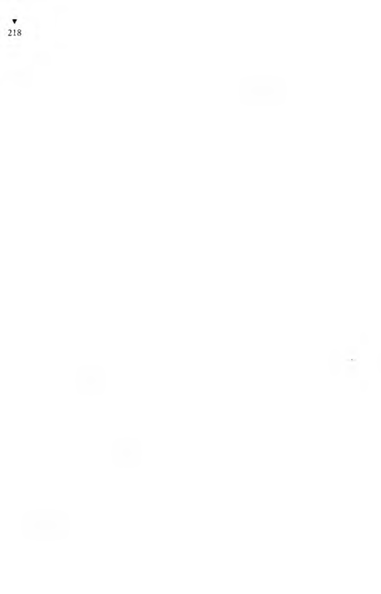
Maltızcı’ya çırak olmak istedi. Kısa sürede işi öğreneceğini, ço-
kaz paraya çalışacağını söyledi. Maltızcı, zenaatı cenekecilikolaıı
bir hükümlüyü yanında çalıştırdığı için Yaşar’a iş veremedi.
Yandaki koğuşta bir hükümlü, boncuk işleri yaparak geçimini
sağlıyordu. Ama o çırak kullanmıyor, kendi el hüneriyle, boncuklardan çantalar, cüzdanlar, tespihler, hatta boncuk işli kadın terlikleri yapıp, hapisane andacı olarak ziyaretçilere satıyordu.
Renkli boncuklardan öyle göz alıcı, öyle güzel şeyler yapıyordu
ki, insan bakmaya doyamıyordu. Yaşar, öbür koğuştaki Boncuk-
çudan da iş istedi. Boncuk işlemesini bilmiyordu ama, çokaz
paraya çalışmaya razıydı. Kısa sürede de boncuk işlemeyi öğrenecekti. Boncukçu, kendisine rakip yetiştirmek istemediğinden, yanına çırak almamakta kararlıydı.
Yaşar Yaşamaz, bir geçim yolu bulmak için nereye elini attıysa orasını kuruttu. G ünün öğleye yakın zamanında herkes bahçedeyken, o yatağına oturmuş, sazını yavaştan yavaştan çalıp
bişeyler mırıldanmaktaydı ki, Yarımporsiyon’un sesi yine ortalığı
çınlatmaya başladı:
- İçeriii, içeri! Herkes içeri! Dışarda kimse kalmayacak!..
Koğuşa giren hükümlüler, birbirlerine sorarak bu saatte içeı i
sokulmalarının nedenini anlamaya çalışıyorlardı.
Az sonra, İdareci,
- Mahkemecileeer, mahkemeciler! diye bağırıp, o gün duruşmaları olanların listesini okumaya başlayınca, hükümlüler neden koğuşlara sokulduklarını anlamışlardı.
Mahkemeye gidecek hükümlüler arasında, birbirlerinin ha-
sımları olanlar varsa, bir vuruşma tehlikesini önlemek için, ya
hükümlüler koğuşlarından çıkmadan, duruşması olanlar alınır
yada böyle bahçeye çıkmış olanlar koğuşlarına sokulduktan sonra,
duruşmaları olanlar ayrı ayrı çağrılırdı.
İdareci, çıngıraklı sesiyle bağırarak duruşması olanların listesini
okuyordu:
- Mahkemeciler, mahkemeciler, mahkemecileeer...
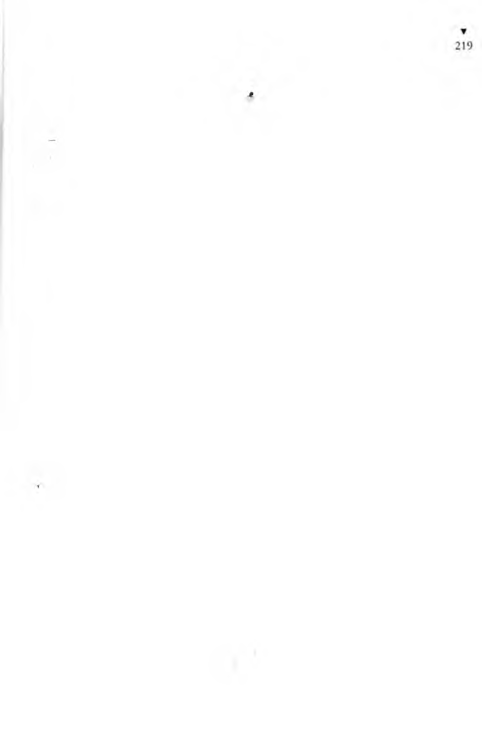
Yarımporsiyon, hükümlüleri içeri sokmaya öyle alışmıştı
ki, bütün hükümlüler koğuşlarına girdikleri, kısım kapıları da
lupanmış olduğu halde, Yarımporsiyon hâlâ,
İçeriii, içeri! Mahkemecilerden başka kimse dışarda kalma-
rmi ak, hadi içeri! diye bağırıp düdüğünü öttürüyordu.
Yaşar Yaşamaz, olup bitenlerle, koğuştakilerle hiç ilgilenmiyor,
s.ıııki koca koğuşta tek başınaymış gibi, bişeyler mırıldanarak,
çok alçak sesle sazını dımbırdatıyordu.
Koğuşun en yaşlısı olan sis düdüğü sesli eski sabıkalı,
- Ulan dilekçeci, bizim koğuştan mahkemesi olan yok mu
bugün? diye sordu.
Dilekçeci de,
- Baba, bizim koğuş, yandımallah koğuşu... dedi.
Maltızcı, yanındakine Yışar Yaşamaz’ı kafasıyla işaret edip,
- Seninki gene bişeyler yapındırıyor... dedi.
- Kimseyi gözü görmediğine göre, gene türkü yakıyor besbel-
li...
Maltızcı,
- Akşama dinleriz öyleyse... dedi.
Yarımporsiyon’un düdük sesiyle kendi bağırtısı uzaktan
(•eliyordu:
- Dinleyin, açın kulağınızı! Mahkemecilerin listesi okunacak.
Yalnız mahkemeciler çıksın koğuşlardan. Ötekiler hep içeriii,
içeri!
Mahkemeciler gittikten sonra kısım kapıları açıldı, hükümlüler yeniden bahçeye çıktılar. Ama Yaşar o gün koğuştan hiç çıkmadı, çok alçak sesle sazını çalıp türküler mırıldandı. Yemek
de yemedi.
Akşam yoklamasından, yemekten sonra, koğuştakiler düzenlerini almışlardı.
Kral Sami,
- Haydi Yaşar, bekliyoruz oğlum... diye seslendi.
Yaşar Yaşamaz aldı sözü:
- Evet ağbiler, emiceler... Böyle yaşanır mı? Bu da yaşamalı
mı? Nedir benim çektiğim be! Yaşadığımı ispat edemedikten
sonra, yaşamışım n’olacak, yaşamamışım n’olacak...
Kral Sami,
- Aman Yaşar, sakın... dedi.
- Sakını makini kaldı mı artık ağbi... Canıma tak demiş...
- Yapma... Yoksa canına mı kıyacaksın?
- Ölüm ölüm, bir ölüm ağbi... Kendi kendime, “Oğlum Yaşar,
ölümlerden ölüm beğen!” dedim. İçerim fare zehirini, kurtulurum
be... Gittim eczaneye. Fare zehirinin cn şiddetlisinden bir şişe
aldım. Zehir şişesinin kutusu içinde nasıl kullanılacağı yazılı biı
kâğıt var. Tarifesinde yazıyor ki: “Aman zehir elinize sürülmesin,
biyerinize dokunmasın. Çok tehlikelidir, parmağınızın uctııı.ı
değmesin! Bir damlası bin fareyi öldürmeye yeter!”
İşte, tam da benim aradığım zehir. Tenha biyere gittim. Biı
şişe fare zehirini içip, ordaki duvarın dibine uzandım. Arlık
ölümü bekliyorum. Şimdi elim ayağım çekilecek, şimdi da
m arlarım büzülecek, şimdi dilim damağım kuruyacak, nerdeysı
ayaklarım titreyip cartayı çekeceğim. Öleceğim, ölüp de kurlu
lacağım diye öyle mutluyum ki... Karnım sancıyacak, heryamm
uyuşacak diye bekliyorum. Dündenberi de aç olduğumdan, uç
karnıma da bir şişe zehiri içmiş olduğumdan, barsaklarım gıı
ruldamaya başladı. İçim eziliyor, artık açlıktan mı, zehirden mi,
bilmiyorum. Karnıma söz geçirip barsaklarımın guruldamasını
kesemediğimden,
“Hiç boşuna söylenip durma, son kısmetini verdim. Ne kad.ıı
bağırırsan bağır, görüp göreceğin, yiyip yiyeceğinin hepsi o şişe
zehirdi, başkası yok...” dedim.
Bir damlası bin fareyi öldürecek bir şişe zehiri içtim de, bende
gene bir zehirlenme belirtisi yok. Derken derken, bir ağır uyku
bastırdı... Demek, insan böyle zehirleniyor diyerek, uzandığım
yere, çöplerin arasına iyice yayıldım. Bir oynak havalı müzik
duymaya başladım. Allah Allah!.. Yarı uyku, yarı uyanıklıkla.
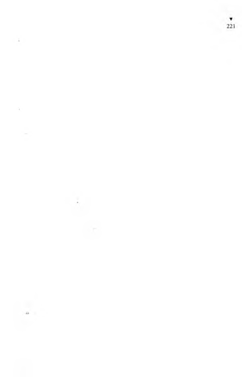
Kıyandan müzik, biyandan da kahkahalar duyuyorum. Müzik,
uyun havası, kahkahalar gittikçe artıyor.
“Nedir bu cümbüş, nerdeyiz?” diye seslendim.
Derinden, tok, yankılanan bir ses duydum:
“Düğün var, düğün... Haberin yok mu düğün olduğundan
Yaşar Yaşamaz?”
Allah Allah! Şaştım kaldım. Bu yankılanan dik, kalın ses
kiminse, adam benim adımı da biliyor. Demek, beni tanıyor.
“Kimin düğünü?” diye sordum.
Gene o yankılanan ses cevap verdi:
“İnsan çağrılı olduğu düğünün kimin olduğunu bilmez mi
biç!”
“Ben şimdi bu düğüne çağrılı mıyım?” diye sordum.
“Hem de kırmızı dipli balmumlu çağrılıkla...”
Bu söz üzerine alaylı kahkahalar daha da arttı.
Yarıdan çok çıplak, güzelin güzeli kızlar çevremde dönerek
oynuyorlardı.
O kalın, tok ses gene yankılandı:
“Oğlum Yaşar Yaşamaz! Yeryüzünde çektiğin çile elverdi, seni
ı cıınete aldım.”
“Aman, burası cennet mi?” diye sordum.
() ses yankılana yankılana,
“Hem de eşşek cenneti,” dedi.
( i ene alaylı kahkahalar yükseldi.
Ben bu şaşkınlık içindeyken, kuyruksokumumda acılar duydum. Biri beni arkamdan tekmeliyor. Gözümü azıcık aralayıp baktım; başımda iki kişi dikilmiş. Biri öbürüne,
“Sarhoş mudur nedir...” diyor.
Ö bürü de,
“Besbelli serseri...” diyor.
Kalktım ayağa. Çoktan gece olmuş, karanlık basmış ben
orda uyurken. Beni kaldıran o iki kişi de bekçi. Ben uyurken
çöplükteki kedilerin miyavlamaları, köpeklerin havlamaları da,
bana çalgı çalınıyor, insanlar konuşuyor gibi geliyormuş.
Ölmemiş olduğuma çok canım sıkıldı.
“Yazık, ölemedim...” diye kendi kendime söylendim.
Bekçilerden biri,
“Az daha uyusan da uyandırmasaydık, köpekler parçalayacak,
geberecektin,” dedi.
“Kendimi öldürmek için cebimdeki son parayla bir şişe fare
zehiri alıp içmiştim. O para boşuna gitti...” dedim.
İki bekçi de gülmeye başladı. Hem gülüyor, hem anlatıyorlardı.
Hiç gazete okumuyor muymuşum? Eczanedeki ilaçlar hep katkı
lıymış, bozukmuş. Sağlık Bakanlığı bu etkisiz ilaçlan eczanelerden
toplatıyormuş. Bekçilerden birinin gecekondusunda o kadar çok
fare varmış ki, bekçinin hergün aldığı dört ekmeğin yarısından
çoğunu fareler yer, çocuklar da aç kalırlarmış. Ne yaptılarsa, yi
yecekleri farelerden koruyamıyorlarmış. Sonunda bekçi de benim
gibi, eczaneden bir şişe fare zehiri almış. Hani, damlası değse
insanı zehirler diye tarifesinde yazılı olan zehirden. Bir şişe zehiri,
ekmek lokmalarına bulayıp evin orasına burasına koymuşlar.
O gece hiç fire gürültüsü duyulmamış. Fareler zehirlenip öldü
diye sevinmişler ama boşuna; çünkü ertesi akşam fareler dalı.ı
çok azmışlar. Gene bir şişe zehir daha almışlar, gene ekmeklere
bulayıp farelere yedirmişler. Zehirlenmeleri şöyle dursun, fareler
zehirli elemekleri yedikçe beslenip gelişip daha da çoğalıyorlarmış.
Sonunda fareler, zehire öyle alışmışlar ki, gecekondunun orasına
burasına geceleri zehir sürülmüş ekmek parçaları bırakılmazsa,
gürültü patırtı edip kıyameti koparıyorlarmış. Zavallı bekçi de,
çoluğu çocuğu geceleri rahat uyusun diye, hergün bir şişe fare
zehiri alıp ekmeklere sürüyor, farelere veriyormuş. Son zaman
larda bir şişe zehir yetmez olmuş farelere.
İyi ki fare zehirini ikinci kez denemedim. Yoksa ben de fareler
gibi zehire alışacaktım belki de...
Ölmek bile parayla. Parasız kendimi öldürmemin bir yolu var,
demiryolu raylarının üstüne yatıp, tirenin üstümden geçmesini
beklemek. Öyle de yaptım. Tarifeye baktım. Tirenin gelmesine
oıı dakika var. İstasyondan biraz uzaklaşıp rayların üstüne yattım.
C
)n dakika, onbeş dakika, yarım saat... Kalkıp istasyona gittim,
ordaki memura,
“Yahu, herkesin işi gücü var, nerde kaldı bu tiren, neden
gecikti?” diye sordum.
İstasyon memuru,
“Sen bu memlekete Merih’ten mi geldin yahu...” diye çıkıştı.
“Neden Merih’ten geleyim?” diye sordum.
“Bu memlekette tirenin tarifesine göre işlediği ne zaman
görülmüş ki...” dedi.
Zehirler bozuk, tirenler zamanında gelmez. Ee, peki, ne olacak!
En iyisi havagazıyla boğulup ölmek. O sırada, dört arkadaşla
birlikte bir han odasında kalmaktayım. H anın odabaşısının
odasında havagazı musluğu var. Bigün, temizlemek bahanesiyle,
odabaşının odasına girip kapıyı ardından sürgüledikten sonra,
havagazı musluğunu sonuna dek açtım, burnumu da musluğa
dayadım. Havagazından zehirleneceğim diye beklerken, bir
rahatlık, bir ferahlık duymaya başladım. O sırada, odanın kalın
lahta kapısı güm güm dövülmeye başlandı.
Odabaşı,
“Aç kapıyı Yaşar!” diye biriki kez seslendikten sonra,
“Herhalde temizliği yapıp gitti...” diyerek anahtarını, kilide
sokunca, burnumu havagazı musluğundan ayırmadan,
“Girmece! Tehlikeli!..” diye bağırdımsa da, odabaşı kapıyı açıp
içeri daldı. Beni, burun deliğimi havagazı musluğuna sokmuş
görünce,
“Ne yapıyorsun Yaşar?” diye sordu.
“Aman azkaldı, müsaade et, havagazından zehirlenmek üzereyim,” dedim.
Odabaşı güldü,
“Oğlum, bu saat akşam yemeği saatidir. Şimdi herkes evinde
havagazı ocağını kullandığından, havagazı borularından gaz
gelmez, temiz hava gelir,” dedi.
“Yahu, ne biçim memleketteyiz be... Yaşasam, bırakmazlar ki
yaşayayım... Ölsem, ölünmez. Zehirler etkisiz, drenler tarifesi/,
havagazı gazsız... Peki biz kendimizi nasıl öldüreceğiz!” diye
bağırdım.
Odabaşı, şaka yaptığımı sanıp,
“Canına kıyacaksan, söğüt dalı Bursa bıçağına ne olmuş..."
dedi.
Hay Allah razı olsun. Öyle ya canım, insanoğlunun bir bıçaklık
canı var. Odabaşına,
“Sağol, hay aklınla bin yaşa!” deyip yürüdüm . Bıçak alacak
param da yok. Sırtımda kalın ceketim var. Hava kış, soğuk ama,
öldükten sonra ceket neyime yarayacak? Ceketi ucuza satıp güzel
bir bıçak aldım. Bıçağı soktum cebime. Bir de m ektup kâğıdıyla
zarf aldım ki, Anşe’me bir elveda m ektubu bırakayım. Mektubu
yazmak için bir kahveye girdim. Tam Anşe’me m ektubu yazmaya
başladım, “Elveda ey kahpe dünya!” diye yazmıştım ki, birden
kahveyi arama tarama polisleri bastı.
Ö ndeki sivil polis,
“Eller yukarı!” diye bağırdı.
Kahvede oturanların hepsi ellerini havaya kaldırdı. Polisler,
hepimizin üstünü başını aramaya başladılar. Ü stüm ü arayan,
cebimde bıçağı buldu.
“Bu ne?” diye sordu.
“Bıçak!” dedim.
“Kör değilim, görüyorum bıçak olduğunu. Ne yapacaksın
bununla?”
“Hıyar soymak için...”
Aldı bıçağı. Gene de büsbütün şanssız sayılmam, silah taşımaktan bir araba dayak attıktan sonra bir de mahkemeye verebilirlerdi.
Ben kendimi öldürmeye girişmeden önce, nasıl olsa yaşanmıyor, kendini öldürmenin kolay olduğunu sanırdım. Yahu, ağbiler, ölemiyorsun da... İp mi? Denemedim mi sanıyorsun? Kendimi
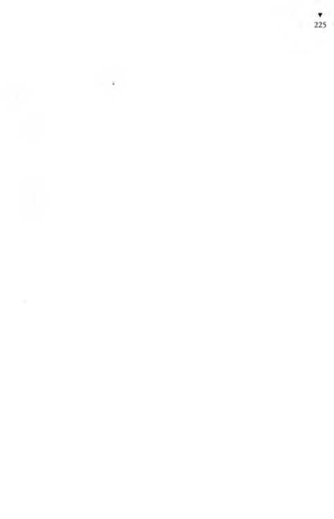
I ı.ııı odasının tavanına astığım ip koptu. Zehiri bozuk, ipi çürük,
bıçağı sende bırakmazlar, tireni tarifesiz, havagazı hava...
Aynı odada kaldığımız arkadaşlardan birinin tabancası oldu
ğunu dikizlemiştim. izledim gizlice, tabancanın yerini öğrendim,
bigün odada onlar yokken, ordan tabancayı alıp namlusunu
.ılınma dayadıktan sonra tetiği çektim. Evet, tetiği çektim... Dan!
Yere yuvarlandım. Tabanca sesine odaya doldular. Beni yerde
gören kahkahayı basıyor. Yahu, bu nedir? Ben ölmekteyim, onlar
gülüyor. Şakağımdan yüzüme aşağı kanımın aktığını duyuyorum.
Ama hiçbir acı duyduğum yok...
Neye gülerlermiş, bilir misiniz? Arkadaşın tabancası, tıpkı
gerçeğine benzeyen bir oyuncak tabancaymış. Tetiğe basınca, hem
patlar, hem de namlusundan boya fışkırtırmış. Ben, şakağımdan
kan akıyor sanmaktayım, oysa namludan fışkıran renkli boyayla
suratım maskaraya dönmüş de ona gülerlermiş.
İşte böyle ağbiler; ölmek istesen de ölünmüyor. Yaşanmıyor
ila... Sürün sürünebildiğin kadar...
Anladım ki, insanın şansı yoksa ölemiyor bile... Ben de o
/aman kendi kendime,
“Yaşar oğlum, ne yaşayabiliyorsun, ne ölebiliyorsun... Sen de
boş ver, nerden incelirse ordan kopsun!” deyip, odadaki arkadaşlardan birinden borç alıp, bir lokantaya daldım. Günlerdir ağzıma sıcak yemek girmemiş. Pastırmalı yumurtaya bayılırım.
İki tabak pastırmalı yumurta yedim. Üstüne de makama, sonra
da zeytinyağlı dolma... Aşçıdan çıktım, pastacıya girdim. İki de
pasta yedim, işi tıkırında insanlar gibi. Oooh! Bir de gazete alıp,
parka gittim. Bir sıraya oturup gazetemi okumaya başladım.
Dünya umurumda değil artık... Ne iş düşünüyorum, ne para...
Gazetemi okurken, karnıma bıçak gibi bir sancı saplandı ki,
dayanılası değil. Kavranmaya başladım. Hem kıvranıyorum, hem
i nliyorum. Dayanamadım, tahta sıraya uzandım. Boncuk boncuk
ter dökmekteyim. Başıma meraklı insanlar toplandı. Kendi canımın acısına düşmüşüm ama, gene de konuştuklarını duyuyorum.
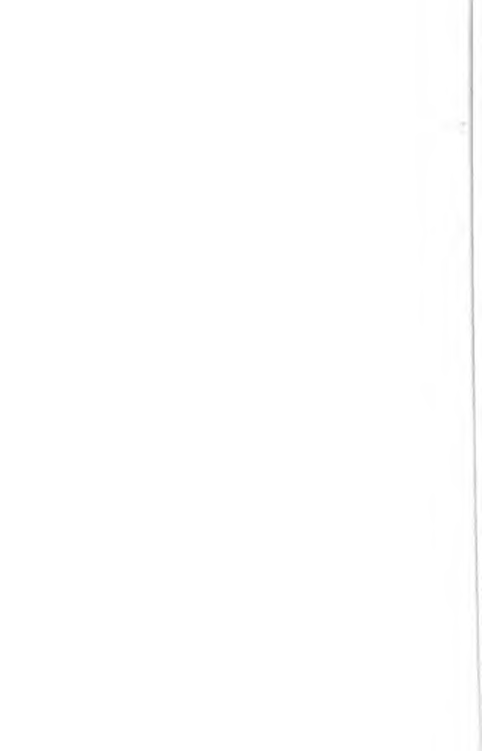
“H erif ölüyor galiba...”
“Ölmüş bile...”
“Yok, daha ölmemiş, ölse kımıldar mı hiç...”
“Eh işte, nerdeyse ölecek... Baksana yüzüne, mosmor kesil
miş...”
“Yahu, adama bişey yapmalı be, yazık!..”
“Sakın dokunmayın haaa, üstünüzde kalır...”
“Evet evet, başınız derde girer, hiç dokunmayın en iyisi...”
“Vallahi öyle... Ondan sonra artık, karakollarda, emniyetle
filan, işin yoksa uğraş dur...”
“Vallahi, karakola yakanızı bir kaptırdınız mı, bir daha kurtarmak zordur.”
“Uzak durun, uzak durun!.. Tanık yazarlarsa, yanarsınız haa,
enaz bir ay sorgusu morgusu sürer.”
“Yahu, kimsede insanlık kalmamış be... Açılın ulan, açılın!”
Öyle bir acı ki sanki barsaklarım kazınıyor.
Efendiden bir adam,
“Polise haber verelim de hastaneye kaldırsınlar. Yazıktır adama...” dedi, demesiyle de, “Poliiiis!” diye bağırmaya başladı.
Parkın kapısı dışındaki kalabalık içinde polisler de gidip
geliyordu ama, adamın, “Poliis!” diye bağırmasına hiçbiri aldırmıyordu.
O adam, epiy zaman, “Poliis!” diye boşu boşuna bağırdıktan,
polislerin gelmeyeceğini anladıktan sonra, çevresini saran ve
gittikçe artan kalabalığı yarıp, karşı kaldırımdaki polise gitti.
“Bay polis, lütfen gelir misiniz?” dedi.
Polis,
“Ne var?” diye sordu.
“Şurada bir adam ölüyor da...”
Polis,
“O işe ben karışmam. Ben trafik polisiyim, burdan ayrılamam,”
dedi.
Adam bu kez sokakta,
“Poliiis!” diye bağırdı.
Yolcular arasından bir polis görüp gitti yanına,
“Bay polis, bir dakika! Şurda bir adam ölüyor. Bakar mısınız
biraz...” dedi.
Polis,
“Adam mı ölüyor... O işlere ben karışmam, ona İkinci Şube
polisi bakar. Ben pasaport polisiyim...” deyip hızlı hızlı uzaklaştı.
Sancılarım zaman zaman azalıyor, sonra gene birden bastırıyordu.
O iyiliksever adam, bir polis bulmaktan umudunu kesmedi.
( 1 ittikçe artan kalabalığın ortasında bir polis bulabilmek için çırpı iliyordu. Sonunda buldu, yardıma çağırdıysa da, o polis de,
“Ben böyle işlere karışamam, ben vilayet maiyet polisiyim!”
deyip uzaklaştı.
İyi ki, ordan çok polis gelip geçiyordu. Yardımsever adam, bir
polis daha buldu.
“Koşun, gelin, bir adam ölüyor, yardım edin!” dedi.
“Ben karışmam, belediye polisiyim...” diyerek, kovaladığı
işportacının arkasından koşarak ordan uzaklaşmanın umarını
buldu.
Adam,
“Polis yok mu, poliiis...” diye bağırmaktaydı.
Tam o sırada ben de acıdan, sancıdan kıvır kıvır kıvranmaklaydım. Polis vardı, çoktu ama, hiçbiri bu işle ilgilenecek polis değildi. Adam, uzaktan gördüğü bir polise koşup,
“Affedersiniz, kaçıncı şubedensiniz?” diye sordu.
Polis, İkinci Şube polisi olduğunu söyleyince, adam,
“Aman ne iyi, şurda bir adam ölmek üzere, yardım edin
lütfen,” dedi.
Polis,
“Ben karışamam. İkinci Şube’denim ama, Hırsızlık Masası
memuruyum,” deyip adamın elinden kurtuldu.
ikinci Şube’den bir polis daha bulmuş, çok sevinmişti ama, o
da, ikinci Şube’nin Kaçakçılık Masası’nda çalışan bir polis olduğu
için, ölenlere karışamıyordu.
Yardımsever adam, hiç umutsuzluğa kapılmadan polisten
polise koşuyordu. Bir polis daha buldu.
“Affedersiniz ikinci Şube’den misiniz?”
“Evet, n’olacak?”
“Cinayet Masası’ndan mı?”
“Evet...”
“Ah ne isabet!.. Çok şükür!.. Bay polis, koşun, şurda bir adanı
ölmek üzere.”
“Nerde?”
Adam, beni gösterdi eliyle:
“işte şurda!”
“Ben karışamam...”
“Neden bayım? Hem ikinci Şube’den, hem Cinayet Masa
sı’ndansınız?”
“Evet ama, orası benim bölgem değil. Ben bu yolun üst yanına
bakarım.”
Yardımsever adam, başka bir polise koştu.
“ikinci Şube’den misiniz?” diye sordu.
“Evet.”
“Cinayet Masası’ndan mı?”
CC T- '
»
hvet.
“Burası sizin bölgeniz mi?”
“Evet.”
“Aman ne şans!.. Şıırda bir adam ölüyor da...”
“Ben karışmam.”
“Neden?”
“Bugün izinliyim.”
iyiliksever adam, nerdeyse umutsuzluğa kapılmak üzereydi.
Yanıma geldi. Benim de sancılarım biraz azalmıştı. O iyilikseveı
adamın yanına yaşlıca bir bay sokuldu,
“Siz,” dedi, “polis mi arıyorsunuz?”
“Evet, arıyorum ama, polis yok ki... Bulduğum polisler de
'ben karışmam’ deyip kaçıyor.” *
Yaşlıca bay,
“Siz gerçekten polis gelsin istiyorsanız, benim dediğimi yapın.
( )ylc sizin çağırdığınız gibi polis çağrılmaz.”
“Ya nasıl çağrılır?”
“Çıkın şu bankın üstüne. Sonra da ordan, ‘Bu ne biçim düzen?
Bu ne rezalet! Bu ne alçaklık! Bu ne utanmazlık!’ diye bağırın,
işte o zaman, yerden mantar gibi polis biter, havadan karga gibi
polis üşer, sen de şaşar kalırsın...”
O iyiliksever adam,
“Tek polis gelsin de, dediğinizi yaparım,” deyip benim üstünde
sancıdan kıvrandığım banka çıktı, ama sanırım biraz korkuya
kapıldığı için, fısıldar gibi söylendi:
“Bu ne biçim yönetim, bu ne biçim düzen!”
Sözün arkasını söyleyemedi. Yirmi otuz kişi birden o adamı
çevirip kimisi elinden kolundan, kimisi yakasından paçasından
ıııttu.
Adam,
“Siz kimsiniz?” dedi.
Onlar da,
“Polisiz!”
“Siyasi polis!”
“Sivil polis!”
“Ajan...” diye kendilerini tanıttılar.
Üzerine ençok saldıranlardan birine, adam,
“Sen?” diye sordu.
O da,
“Ben de muhbirim!” dedi.
Başımda toplanan kalabalığın yarısından çoğu, sivil polis
olduğundan adamı yakalayıp sürükleyerek götürdüler. Nereye
götürdüklerini anlayamadım. Çünkü sancılar öyle artmıştı ki,
kendimden geçmiştim.
Gözümü hastanede açtım. Gözümü hastanede açtığımda, has
taneye getirileli iki gün olmuştu. Beni hastaneye kim getirmiş,
nasıl getirmiş, bilmiyorum.
Bana bakan çok iyi bir hekimdi.
“Oğlum, niçin canına kıydın?” dedi.
“Bende o talih nerde a efendim, çok uğraştım ama, canıma
kıyamadım,” dedim.
O zaman hekim bana, zehirlenmiş olduğumu, hastanede içimi
temizleyip beni kurtardıklarını söyledi. Ben de, fare zehiri bile
içip zehirlenmediğimi, aşçıda yemek yedikten sonra o sancıların
başladığını söyledim. Neler yediğimi öğrenince, hekim,
“Tamam...” dedi. “Pastırma... Üstüne makarna... Üstüne zey
tinyağlı dolma... Üstüne de bayat pasta... Elbet zehirlenirsin.”
Kendimi tutamayıp ağlamaya başladım.
“Doktor Bey, hazır zehirlenmişim, ne diye beni kurtardınız?”
dedim.
“Niçin ölmek istiyorsun?” diye sordu.
Ben de başımdan geçenleri kısaca anlatıp,
“Başka ne yapayım... Yaşamak istiyorum, yaşayamıyorum; öl
mek istiyorum, ölemiyorum. Siz söyleyin ne yapayım?” dedim.
Yaşar Yaşamaz, derin bir iç geçirip, koğuş arkadaşlarına,
- İşte böyle ağbiler, dedi, yaşasan yaşanmaz, ölsen ölünmez!
Hükümlüler, şaşma belirtisi olarak, hep birden,
- Haydaaa! çektiler.
Yaşar, o gece gerçekten çok içlenmişti. Sazının üstüne yumulup
yeni türküsünü söyledi:
Kala kala gölgem tek can yoldaşı
Yoruldum kendimden taşı ha taşı
Bağrıma taş bastım bağrımda taşı
Yaktı da kül etti gönül ataşı
Ağlaşan ağlanmaz gülsen gülünm ez
Yaşasan yaşanmaz ölsen ölünmez
Bize yaşamak da ölmek de yasak
Resmi kayda kuyda olm uşui tutsak
Bırakın ölelim ölüm de bir hak
Ö lünm ez yaşanm az bilmem ne yapsak
Ağlaşan ağlanmaz gülsen gülünm ez
Yaşasan yaşanmaz ölsen ölünmez
Yaşar, son ikiliği söylerken, koğuş arkadaşları da kendisine
katıldılar:
Ağlaşan ağlanmaz gülsen gülünm ez
Yaşasan yaşanmaz ölsen ölünmez
Yaşar,
- Beni ölümden kurtaran hekim çok iyi insanmış, dedi.
Heykelci,
- Seni adam ölümden geri çevirmiş, daha da iyi olmaz mı...
dedi.
Yaşar,
- İyiliği o kadarla da kalmadı, bana, nüfuskâğıdım olmadan
iş verecek birini salık verdi... dedi.
Koğuştakiler, ertesi akşam da, bu serüveni dinleyeceklerini
anlamışlardı.
Herşeyin Esası M antık
T aştan ekmeğini çıkarır” sözündeki beceriklilik, Yaşar Ya
şamaz’ın ekmeğini çıkarmaktaki becerisi yanında hiç kalırdı. Yaşar
Yaşamaz, cezaevinde düştüğü sıkıntı sonunda, havadan ekmeğini
çıkarmaya başlamıştı. Yalnız ekmek parası değil, ekmek parasının ötesinde de para kazanmanın, para biriktirmenin yollarını arıyordu. Çünkü, cezaevinden çıkarılmasına az kalmıştı. Artık
Karakaplı Nizami Beyin de kim olduğunu öğrenmişti. O, bitek
kişi değildi. Biçok, pekçok Karakaplı Nizami Beyler vardı. İrili
ufaklı, yaşlı genç, orda burda, herzaman, heryerde vardı onlardan.
Yeter ki insan, Karakaplı Nizami Bey'lerden birisini görünce,
onu tanısın ve dilinden anlasın... Hele bir çıksındı cezaevinden,
nasıl olsa Karakaplı Nizami Beylerden birini bulacağına güveniyordu. Bunca aydanberi cezaevinde boşu boşuna yatmamıştı ya... Bulmasına bulacaktı Karakaplı Nizami Bey’lerden herhan-gibirisini de, cepte para olmayınca, Karakaplı Nizami Beylere
hiçbir iş yaptırılamazdı. İşte buyüzden Yaşar Yaşamazın para
biriktirmesi gerekiyordu. Karakaplı Nizami Bey sanarak, gönüllü
uşaklık ettikten başka, Beyler Koğuşundaki o iri herife üstelik
parasını da kaptırınca on parası kalmamıştı. Her akşam koğuş
arkadaşlarına başından geçenleri anlatarak, saz çalarak, ozanlık
ederek, onların toplayıp kendisine verdikleri üç beş kuruşla, biı
taş duvarlar arasında, taş yüreği çarpmayan bu cezaevinde, ancak
karnını doyurabiliyor, bir de cıgara parasım sağlayabiliyordu.
Heykelci’nin hamurkârlığına, Avcı’nın izmarit toplayıcılığına
istekli olmuş, ama tersyüz, edilmişti. Maltızcı’ya çırak olmak
istemiş, ondan da yüz bulamamıştı.
Yaşar Yaşamaz, uykusuz geçirdiği bütün bir gece düşünerek,
sonunda aşçılık yapmaya karar verdi. Aşçılık yapması için ne
parası, ne ocağı, ne tenceresi vardı. Ama ağzının laf yaptığına,
insanları inandırdığına, dilinin tatlılığına güveniyordu.
İkinci kısım koğuşlarının açıldığı koridordaki aşçılardan işi
en kötü olana gidip,
- Arkadaş, senin hesabına her öğün, enaz on tabak fasulye
sarsam, bana tabak başına ne verirsin? diye sordu.
Aşçı, yirmi kuruş vereceğini söyledi.
Çekişe çekişe pazarlıktan sonra, tabak başına yirmibeş kuruşa
kesiştiler. Her tabak fasulye iki liraya satılıyordu. Yaşar, enaz on
labak fasulye satmak koşuluyla, her tabak için aşçıdan yirmibeş
kuruş alacaktı.
Bu anlaşma olur olmaz, Yaşar Yaşamaz koridorda bağırmaya
haşladı:
- Lobyacılar, lobyacılaaar! Haniya lobyacılar! Öğle yemeğine
lobya pişiriyoruz arkadaşlar! Hem de kıymalı... Bir tabak lobya
iki teklik... Para peşin, büzük meşin... Bastır iki tekliği, ye lob-
yayı afiyetle. Kıymalı lobya... Sipariş kadar pişirilecektir haaa...
Sonradan ah vah işe yaramaz. Beş lira versen gene yok... Para
peşin, bastırın iki tekliği!
Daha maltız yakılmadan, daha tencere ocağa vurulmadan,
Yaşar onaltı tabak fasulyenin parasını toplamıştı bile. Yalnız
kendi koğuşundan değil, öbür koğuştakilerden de fasulye parası
lopluyordu. Onaltı tabak fasulyenin parası otuziki lirayı peşin
toplamış, kendi dört lirasını aldıktan sonra, paranın geri kalanını
aşçıya vermişti. İşin geri kalan bölümüne karışmıyordu. Onbeş
dakika içinde dört papeli toplamış, işi bitmişti. Artık bundan
sonra aşçı uğraşsın dursun ocağı yakacağım, soğanı doğrayacağım,
fasulyeyi pişireceğim diye...
Akşam yemeğine Yışar, yirmi tabak fasulye parası toplamış,
beş lirasını hemen almıştı.
İş ortaklığı yaptığı aşçı, pişer pişmez fasulyeyi sıcak sıcak tabaklara doldurup dağıtmaya başlamıştı ki, Yaşar Yaşamaz, yanma sokulup ona yavaşça,
- Ne yapıyorsun yahu, dur yavaş ol... Pişer pişmez dağıtılır mı
lıiç... Müşteriler, “Nerde ulan bu lobya!” diye bar bar bağıracaklar,
sana ana avrat düz gidip sövecekler de sen ancak ondan sonra
nazlana nazlana fasulye tabaklarını vereceksin... dedi.
Aşçı,
- O neden o? diye sordu.
- Yahu, adamlar iyice acıkacaklar, açlıktan gözleri dönecek
ki, senin ağıza alınmaz tatsız fasulyeni bile yiyince, “Aman ne de
güzel, ne de lezzetli... Hiç böyle fasulye yemedim hayatımda...”
desinler. Hey avanak aşçı, aşçılık numarasını bilmedikten sonra
yemek pişirmişsin kaç para... Herif açlıktan ölecek... Öyle ki,
önüne bir tabak toz toprak koysan, kaşığı çalıp irmik helvası
diye yiyecek...
Yaşar Yaşamaz’ın propagandasıyla aşçının müşterileri öyle
artmıştı ki bir tencere yetmez olmuş, aşçı iki büyük tencerede
yemek pişirmeye başlamıştı.
Yaşar Yaşamaz, Heykelci’ye gitti. Heykelci, hamurkârınııı
ağzından çiğneyip çiğneyip çıkardığı, biyana yığdığı ekmek
hamurlarından Atatürk büstü yapmaktaydı. Şimdiye dek değişik
boylarda binlerce Atatürk büstü yaptığı için, biyandan konuşur,
biyandan da hünerli ellerine bakmadan, el alışkanlığıyla, tükürükle çiğnenmiş ekmek hamuruna Atatürk biçimini verirdi.
Yaşar Yaşamaz, bu kez ondan iş istemeye geldiği zamanki
ezikliğiyle değil de, bir işadamı keyfiyle, bir eli cebinde,
- Şunlardan bir düzine alsam peşin parayla, bana kaçtan
verirsin Heykelci? diye sordu.
Heykelci, alışverişi son günlerde kapalı olduğu için canı
sıkkın,
- Git işine len Yaşar Yaşamaz oğlum, şakanın hiç sırası değil...
dedi.
- Şaka demedim Heykelci, parasıyla... Hem de peşin... Bir
düzine...
Heykelci, baktı ki, Yaşar Yaşamaz cebinde paraları karıştırarak
konuşuyor,
- Hangilerinden? Atatürk’lerden mi? diye sordu.
Biyandan da, el yordamıyla, o sıra, elindeki Atatürk’ün alnını
ve Burnunu ekmek hamuruyla biçimlendiriyordu.
- Yok... Şu ötekilerden...
- Develerden mi?
- Develer de olur, küfe yüklü eşekler de olur...
- Develerin fiyatı başka, eşeklerin fiyatı başka...
- İyi ya... Bir düzine eşeklerden, bir düzine de develerden ver.
Yerer ki pazarlıkta uyuşalım.
Heykelci, hamurkârına ağzında çiğnettiği ekmek hamurunu,
ilkin içine boya katarak iyice yoğurtuyor, ondan sonra heykellerini
yapıyordu. Develerin ekmek hamuru kahverengi, eşeklerinse kül
ıcııgi boyalıydı. Atatürk’ler ya yeşil yada lacivert boyalı olurdu.
I liç boyasız Atatürk’ler de vardı. Heykelci, arkasındaki duvara,
Boy boy ve renk renk Atatürk büstlerini dizmişti. O denli çok Ata-
ı ürk büstü yapıyordu ki, bir heykel atelyesine çevirdiği yatağı için,
- Burası Atatürk fabrikası... derdi.
Yaşar Yaşamaz, ,
- Söyle, kaç paradan? diye sordu.
Yaşar’ın önerisi, iyi bir alışverişti.
Heykelci,
- Develerin daha verniğini sürmedim... dedi.
- Ne zamana hazır olur?
- Akşama tamam. Pırıl pırıl olur.
- Peki, kaçtan?
- Düzinesi develerin, senin için... -d ü şü n d ü b iraz - elli
lira...
- Oldu... Ama devecisi de olacak önde...
- Yoo... Yalnız deve...
- Deveci de olursa, aha paran...
- Peki...
- Ya eşekler?..
- Onların düzinesi de kırk lira sana...
- Eşekçi de önde yuları tutup çekecek ve de eşek direnecek.
— O da oldu...
— Yalnmız...
— Neymiş?
— Çürük hamur istemem.
Hamurkâr ağzını ekmek içiyle tıka basa dolduruyor ve bu ağız
dolusu çiğnenmiş ekmek içi özlü olmuyor, heykel yapıldıktan
sonra çatlıyordu. Buyüzden tükürükle az çiğnenmiş elemek içine,
çürük hamur deniyordu. Onbeş yirmi dakika ağızda tükürükle
çiğnenen ekmek içinden yapılmış heykellerse, zamanla gittikçe
sertleşiyor, taştan sert oluyordu. Hızla atılsa kırılmıyordu.
Yaşar Yaşamaz, kendisini hamurkâr olarak çalıştırmayan Hey-
kelci’ye, cebinden çıkardığı paraları gösterişle havalandırarak,
— Baştan söyleyeyim, dedi, yarım saat çiğnenmemiş, yarını
saat de yoğurulmamış hamurdan heykel istemem...
Paralan Heykelci’nin eline saydı.
Yaşar Yaşamaz’m bu eşek ve deve heykellerini ne yapacağım
koğuş arkadaşları merak ediyorlardı. Ama o, ertesi günü akşamı,
Heykelci’ye bu kez, ikişer düzine eşekle, ikişer düzine de devi'
ısmarlamış, parasım da peşin ödemişti.
Heykelci,
— Atatürk istemez misin? diye sordu.
— Bir tane de Atatürk başı isterim ama, onu tahliye olacağını
gün alacağım senden... Kocaman bir Atatürk başı olacak, kentli
başı kadar, anladın mı?
Heykelci,
— Ulan o kadarına hamur yetmez be! dedi.
— Yetmezse, sen de yanına iki üç hamurkâr al çalıştır...
Yaşar Yaşamaz, koğuşundaki İdareciyle arayı uydurmuş, fasulye
satışından kazandığı paraya onu havadan ortak yaparak, ziyaret
günleri, ziyaretçilerin arasında özgürce dolaşıp onlara hapisane
işi hediyelik heykeller satmaya başlamıştı. Koğuştaki hükümlü
olan İdareci, başgardiyana rica ederek, iyi bir insan olan Yaşar m
üç beş kuruş kazanarak yolunu bulması için aracı olmuştu.
H E R Ş E Y İ N E S A S I M A N T I K
▼
237
Ziyaret günleri, cezaevindeki akrabalarını görmeye gelenler, da-
luı ziyaret yerine girmeden toplandıkları salonda Yaşar Yaşamazda
karşılaşıyorlardı. Hemen iki üç ziyaretçiden biri, hediyelik heykellerden satın alıyordu. Ziyaretçiler eli açık insanlardı. Pek öyle pazarlık etmiyorlardı. Yaşar, kaça tutturursa, o fiyata satıyordu.
Aşçıya ortak olarak, hergün iki öğün yirmişer dakika içinde on
oııbeş lira yemek satışından, haftada bir gün de ziyaret günleri
heykel satışından, enaz ikiyüz lira kazanıyordu. Ama yine de
gözü doymuyordu. Çünkü, cezaevinden çıkınca ilk karşılaştığı
Karakaplı Nizami Beye para yetiştirecekti. Koğuşundaki maltız-
ı lyla da anlaşmıştı. Bu maltızları, konserve kutularından yapılmış
kiiçük ocakları, gaz tenekelerinden yapılma mangalları, cezaevinin
başka kısımlarındaki koğuşlara götürüp satıyor, satıştan yüzde
elli kazanç alıyordu.
Neden “para, parayı çeker” dediklerini Yaşar Yaşamaz şimdi
anlamıştı. Biyandan da rehincilik yapıyor, rehincilikten de para
kazanıyordu. Paraca sıkışanlar, yanlarındaki saat, dolmakalem,
yıkmak, güneş gözlüğü, bavul, eşarp gibi şeylerini Yaşar Yaşamaza
getiriyorlar, karşılığında borç para alıyorlardı. Diyelim bir saat,
elli lira ederse, Yaşar o saat için sahibine beş lira veriyordu. Bir
hafta sonra getirsin beş lirasını alsın saatini geriye. Ama ne var
ki, saatin borcu ödeninceye dek hergün için bir lira faiz işliyordu. Çok zaman borçlarını ödeyemezler, rehin bırakılan eşya da Yaşarda kalırdı.
Bunca para kazanan Yaşar, yine geceleri koğuş arkadaşlarına
başından geçenleri anlatmaktan vazgeçmemişti. Üstelik, bu
anlatmalarına karşılık yine eskisi gibi, koğuş arkadaşlarının
lopladıkiarı parayı da alıyordu.
O akşam yine Yarımporsiyon un sürekli düdük öttürmeleri ve
"İçeriye, haydi içeri!” diye bağırmalarıyla hükümlüler koğuşlarına
g/ırdikten, akşam yoklaması yapıldıktan, yemekler yenildikten
sonra, ikinci kısının birinci koğuşunda Kral Sami koğuştakileri
düzene sokuyordu:
- Haydi arkadaşlar, yerleşin bakalım... Susun hadi...
Koğuşun en yaşlısı olan hükümlü,
- Hani, Yaşar nerde? diye sordu.
Kral Sami,
- Yaşar Yaşamaaaaz! diye seslendi.
- Hop dedik ağbiii... diye Yaşar’ın cevabı duyulunca, koğuşun
sis düdüğü sesli eski sabıkalısı,
- Yahu bu Yaşar amma da açıldı... dedi.
Heykelci,
- Hem de kabak çiçeği gibi... dedi.
- İlk geldiği günü koğuşa, hatırlıyor musunuz?
- Hatırlamaz mıyım... Eee, boşuna dememişler, mapus damı
mekteptir diye... O da dersini aldı.
- Boynuz kulağı geçti arkadaş...
Kral Sami bir daha seslendi:
- Yaşar Yaşamaaaz!
- Hop dedik ağbi... Burdayım, buyur!
Yaşar, seğirtip gelmişti. Herkesten önce davranıp ocakçıya
seslendi:
- Ağbicim, hapisane işi o güzelim çaylarından bize yapındı-
rıver.
Ocakçı,
- Tavşan kanı geliyooor... diye seslendi.
Çaycı, askı içinde getirdiği çayları dağıtmıştı. Koğuştakiler,
Yaşar Yışamaz’ı dinlemeye hazırdı.
Dilekçeci, sözü açmış olmak için,
- O doktorun seni gönderdiği adama gittin mi? diye Yaşar’a
sordu.
Yaşar da sanki anlamamış gibi,
- Hangi doktor? dedi.
- Yahu, hani zehirlenmişsin de, yatırdıkları hastanede seni
kurtaran doktor, başına gelenleri dinleyince sana acımış da...
- Haa, evet... Öyle ya... Doktor bana kartını verdi. Beni gönderdiği arkadaşına da telefon edeceğini söyledi. Nüfuskâğıdım
olmadan da beni çalıştıracakmış. Hiç öyle yere gidilmez mi!
( liftim. Devlet dairesi değilse de, devlet dairesi gibi biyer.
Canımı kurtaran doktor,
“Gönderdiğim adam, seni işe alırsa, her ne derse desin sen
hep, evet efendim dersin...” demişti. Derim, evet efendim
derim... N ’olacak? Dilim aşınacak değil ya... işsizlikten ciğerim
\ anmış. Ne iş verseler yapacağım, ister çöpçülük, ister lüpçülük...
I )oktorun beni gönderdiği adam, bu devlet dairesine benzeyen
büyük yerin müdürlerinden biriymiş. Elimdeki kartı göstere
göstere, yanına dek vardım. Odacısı, beni soktu içeri. Ben odasına
I’,irdiğimde, karşısındaki koltuklarda üç kişi oturuyordu. Kendisi
de masadaydı. Masa dersem, ben öyle bir masa görmemiştim,
yayla gibi bir masa, üstüne yan yana iki şilte serilir. Ben içeri
I',irdim, başını döndürüp bana bakmadı bile. Ben de kapının
yanında dikildim, sözü bitsin de bana yüzünü çevirsin diye...
() üç kişiyle müdür, anlayamadığım bir konu yüzünden çekişip
duruyorlar. Müdür çok kızdı. Masasında duran bir iyi su şişesini
kaptı. Ben şişeyi, karşımdakilerin kafasına fırlatacak sandım. Su
şişesini elinde sallayarak,
“Mantık, mantık!.. Herşeyin esası mantık!” diye bağırdı,
sonra onlara sordu: “Bu bir şişe suyla bütün bu odanın döşemesini ıslatabilir miyim, ıslatamaz mıyım? Ha? Söyleyin bakalım, ıslatabilir miyim?”
Karşısında oturan o üç kişi birbirlerine baktılar, ne diyeceklerini bilemediler.
Müdür Bey, sorusuna kendisi cevap verdi:
“Elbet ıslatamam... Hiç bu bir şişe suyla, bu koca odanın
döşemesi ıslanır mı; ıslanmaz elbet. Mantık, değil mi? Mademki
ıslatamam, öyleyse, sizin önerinizi de kabul edemem...”
O üç kişiden biri,
“Ama efendim, affedersiniz, bunun şişe suyunun burasını
ıslatmasıyla ne ilişkisi var?” diye soracak olunca, Müdür Bey
küplere bindi:
“Var, elbet var... Mantık, heryerde mantıktır!”
O üç kişi bozum olup gittiler. Ben de, Doktor’un bana verdiği
kartı yavaşçacık masasının üstüne bıraktım. Karta şöyle bir göz
ucuyla bakıp,
“Doktor, senin için telefon ettiydi, değil mi? Adın neydi senin
bakayım?” diye sordu.
“Yaşar.”
“Bak, Yaşar Efendi oğlum, ben ellisekiz yaşındayım. Başımdan
çook şeyler geldi geçti. En sonunda, bu tecrübelerden şu hakikati
öğrendim ki, herşeyin esası mantıktır.”
“Evet efendim.”
Gene masanın üstündeki iyi su şişesini eline aldı.
“Bak, mesela gördüğün şu bir şişe su... Öyle değil mi?”
Doktor bana, bu adam her ne derse, “Evet efendim,” diyeceksin
diye öğretmişti ya, ben de,
“Evet efendim...” dedim.
“Şimdi bu şişe içindeki suyu yere döksem, bu odanın döşe
meşini ıslatır mı, ıslatmaz mı?”
Nasıl cevap versem, M üdür Beyi memnun edeceğimi bileme
diğim için, ben gene,
“Evet efendim,” dedim.
“Aferin...” dedi.
Ama gene de sordu:
“Söyle bişey. Senin de aklın, senin de mantığın var. Söyle;
ıslatır mı, ıslatmaz mı?”
Bir şişe su, bu odanın döşemesini ıslatmaya ıslatmazdı ama,
benden nasıl cevap istediğini bilemediğim için, lafı gevelemeye
başladım:
“Valia... efendim... Yani... Ne diyeyim, bilmem ki... Elbette...
Tabii... Hiç şüphesiz...”
Ben öyle lafı ağzımda çiğnerken, sert sert öksürmeye başladı.
Anladım ki kızıyor. Kovacağından korktuğum için,
“Siz daha iyi bilirsiniz efendim,” dedim.
Birden bağırdı:
“Benim bildiğimi bırak şimdi. Açık söyle! Çekinme! Islatır
mı, ıslatmaz mı?”
'
“Şişesine göre değişir efendim...”
Elindeki şişenin dibini masasına tak tak vurarak,
“Yahu, şişe işte bn, döşeme de işte burası... Islatır mı, ıslatmaz
• * »
mır
Artık herşeyi göze aldım, kovarsa varsın kovsun.
“Islatmaz!” diye bağırdım.
Geniş bir soluk salıverdikten sonra,
“Yaaa... Gördün müüü! Islatmaz elbette... Hiç, bir küçük
şişe su, bu koca yeri ıslatabilir mi? Islatmaz. Mademki ıslatmaz,
ışteee, insanın bu hakikati herzaman göz önünde tutarak, ona
göre mantıklı olarak ş’apması gerekir. Öyle değil mi?”
“Evet efendim.”
“Aferin. Mantıklı bir gençsin. Seni sevdim. Ben mantıklı
insanları severim. İnsanda önce mantık olmalı mantık.”
“Evet efendim.”
“Aferin.”
Ben ona her “evet efendim” dedikçe, o da bana bir “aferin”
ı, ekiyordu.
“Burda bir herif çalışıyor benim yanımda... Herifte mantık
yok ki... Şimdi buraya çağırıp senin yanında işine son vereceğim,
onun yerine de seni işe alıyorum.”
“Aman M üdür Bey, benim yüzümden kimsenin ekmeğinden
olmasını istemem.”
“Yoooo, senin yüzünden değil, mantıksızlığı yüzünden...
bak, çağırayım da, sen de gözünle gör, kulağınla duy herifin
mantıksızlığını...”
“M üdür Bey, başkasının ayağını kaydırmak istemem...”
“Seni işe almasam da nasıl olsa onu kovacaktım. Mantıksız
insanlarla çalışamam. Bu herif beni çatlatacak yahu...”
Yanındaki zile bastı. Başka bir kapıdan bir adam girdi içeri.
Süklüm püklüm, ezik, zavallı bir adam. İki elini önünde kavuşturup saygıyla,
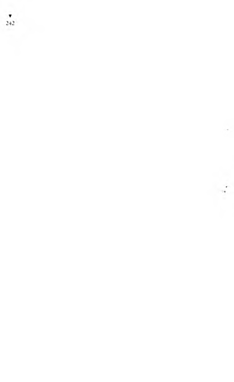
“Buyrun M üdür Bey,” dedi.
Müdür, masasında duran o iyi su şişesini gene eline aldı,
“Bu şişenin içindeki suyu...” diye söze başlamıştı ki, süklüm
püklüm duran adam birden dikilip de,
“Islatıııır!” diye bağırınca koca odanın pencere camları zan
gırdadı.
Müdür, o adama,
“D ur yahu, daha sözümü bitirmedim,” dedi.
Adam,
“Bitirmeseniz de, ne diyeceğinizi biliyorum nasıl olsa. Günde
yüz kez dinlediğim bir söz. Islatır, işte o kadar...” dedi.
M üdür bana döndü,
“Sen de duydun ya Yaşar Efendi oğlum, kulağınla duydun ya,
bak, ıslatır diyor,” dedi.
Adam,
“İsterseniz, ıslatır diye bir kâğıda yazıp altını da imzalayayım
dedi.
Müdür,
“Islatmaz yahu!” diye bağırdı.
Adam, istifini bozmadan, sinirlenmeden, gene,
“Islatır!” dedi.
“Islatmaz!”
“Islatır!”
Dişlerini göstererek birbirlerine hırlayan iki köpeğe benzi
yorlardı.
“Islatmaz!”
“Islatır!”
Müdür, yumruğunu masaya vura vura, olduğu yerde tepiıu
tepine sesi çıktığınca bağırmaya başladı:
“Islatmaz ulan, ıslatmaz! Islatmaz!”
M üdür kızdıkça, öbürü yavaşlıyor, iyice sinir bozucu bir
rahatlıkla,
“Islatır!” diyordu.
M üdür bu kez,
“İşte bu bir şişe su... Gözünün önünde yere döküyorum. Ba-
I .ılım, bütün döşemeyi ıslatacak mı, ıslatmayacak mı? Kendin de
(■özünle gör işte!” deyip, şişedeki suyu yer döşemesine serpelemeye
başladı. Şişedeki su, döşemenin beştebirini bile ıslatmamıştı.
Müdür, iddiayı kazanmış olarak kasılıp,
"Hani ıslattı mı?” dedi.
Ö bürü yine, taşı çatlatan gevşeklikle,
“Islatır, ıslatır...” dedi.
“Islatmaaaz, ıslatmaz be... Islatmaz ulan!”
“Islatır.”
“Ay şimdi bayılacağım. Ay şimdi çat diye çatlayacağım.”
Ö bürü daha da üstüne vardı:
“Hiç boşuna kendinizi zorlamayın M üdür Bey, ıslatır...”
M üdür bu kez yalvarmaya başladı:
“Yahu, sende hiç insaf yok mu, sende hiç merhamet yok mu...
Yahu, ıslatmaz de de, aylığını artırayım be, seni şef yapayım ulan,
ıslatmaz de!”
“Islatır!”
Müdür bana döndü,
“Sen söyle Yaşar Efendi oğlum, dinine, vicdanına, nikâhına,
imanına doğru söyle: Bir şişe su buralarını ıslatır mı?”
“Islatmaz efendim...”
“Hah şöyleee... Mantıklı adamı gördün mü... Mademki ıslatmaz, ıslatır diyen bu adam da bundan sonra burda çalışamaz.
İşine son veriyorum. Defoool!”
Adam giderken, arkasından,
“Dur. İşi, bu Yaşar Efendiye devret. Sonra da hemen git
hurdan. Hadi!” dedi.
Adamın kovulmaktan memnun olmuş gibi bir hali vardı.
Nerdeyse teşekkür edecekti.
“Sağolun, eksik olmayın!” deyip çıktı odadan.
Ben de arkasından çıktım. Kendi kendime, adanı için, “Yahu,
madem bu kadar alttan alacaktın, ne diye ıslatmaz demezsin de,
işinden olursun...” diye düşündüm. Küçük bir odadaki dolaptan
bişeyler topluyordu.
“Arkadaş,” dedim, “çok üzgünüm. Benim yüzümden işinden
etmeyin diye Müdür Beye çok yalvardım, ama olmadı.”
Adam keyifliydi.
“Yok canım, yok... Hiç kaygılanma! Neden senin yüzünden
olsun arkadaş, sen olmasan da nasıl olsa birini bulacaktı benim
yerime...” dedi.
“Yani, çok affedersin, sen de ıslatmaz deyiverseydin, sanki ne
olurdu.”
“Şimdi sana ne desem boş, anlatamam ki... Hele beş on gün
burda benim yerimde çalış, o zaman sen de anlarsın. Ben, bir yıl
içinde değiştirdiği beşinci odacıyım. Ancak ikibuçuk ay dayanabildim, canıma tak dedi. Zaten o, ‘Islatır mı, ıslatmaz mı?’ diye sormasaydı, ben durup dururken, ‘Islatır!’ diye bağıracaktım. O
kovmasaydı beni, ben kendiliğimden çıkacaktım ama, ayıp olur
diye onun kovmasını bekliyordum. İşte biriki parça eşyamı da
topladım. Ben gidiyorum.”
“Dur aman arkadaş... Bana anlatacakların ne oldu? Müdür
Bey, işi devret, dedi ya... Benim yapacağım işi anlat bana...”
“Anlatacak bişey yok. M üdür Beyin odasına birileri geldi de,
aralarında tartışmaya başladılar mı, Müdür Bey, ille kendi dediği
olsun diye zile basar, seni çağırır. Zil sesini duydun mu, içeri seğirteceksin. Sana sorar: ‘Bir şişe suyu buraya düksem, bu yeri ıslatır mı, ıslatmaz mı?’ Senin görevin, ‘Islatmaz efendim!’ demek, işte
bu kadar. Sen ‘ıslatmaz’ dedin mi, mantıklı adamsın, Müdür Bey
de döner ordakilere, ‘Mademki ıslatmaz, öyleyse...’ diye kendini
haklı çıkarır. Haydi Allah sana sabırlar versin arkadaş...”
“İş kolaymış öyleyse,” dedim.
“Kolay, çok kolay... İşsizliğin ne demek olduğunu bildiğim
için, daha ilk günden gözünü korkutmak istemiyorum.”
“Burdan sonra nerde çalışacaksın?”
“Çalışacak yerim yok, işim de yok... İşsizliğe, açlığa razıyım,
burdan canımı kurtardım ya, bu yeter bana... Hadi eyvallah...”
“Gülegüle...”
Eski odacı kapıdan çıktı, zil de çaldı. Hemen Müdür Beyin
odasına daldım:
“Buyrun efendim.”
“Haaa... İyi... Gel... Bana mantık sahibi adam lazım. Benimle çalışacak olanların mantıklı olmasını isterim. Başka .da bişey istemiyorum. Çünkü, mantıklı insanda herşey vardır.”
“Evet efendim.”
“Herşeyden önce mantık... Mantık ne demek? Diyelim şu bir
şişe su. Bu suyu döksem yere, burasını ıslatır mı, ıslatmaz mı?”
“Islatmaz efendim.”
“Aferin oğlum. Hadi git, zil çaldığım zaman gene gelirsin.”
Çıktım odasından. Odacının bir küçük odası var, oraya girip
oturdum sandalyeye. Düşünmeye başladım. Bu adam deli desem,
deli olamaz... Koskoca bir kuruluşun başındaki müdürlerden
biri... Yeri gayet yüksek. Yanına kendi gibi büyük adamlar geliyor. Konuşurken konuşurken, başlıyorlar tartışmaya. Kimileyin politikadan konuşurlar, kimileyin ticaretten filan... Ben kapı
ardından dinlerim konuşmalarını ama çoğu zaman ne dediklerini
anlayamam. İyice yüksekten konuşurlar. Her ne konuda konu
şurlarsa konuşsunlar, M üdür Bey kendi dediğinde haklı çıkmak
istedi mi, ordakilere, “Bu bir şişe suyu yere döksem, bu odanın
döşemesini ıslatır mı, ıslatmaz mı?” diye sorar. Der ki onlara:
“Bir küçük şişe su... Koskoca oda... Elbet ıslatmaz. M antık var
çünkü. Mademki ıslatmaz... Öyleyse...”
Çok darda kalırsa, kendisini desteklememi ister. Zili çalar,
beni çağırır. Bana sorar:
“Bu şişedeki suyu yere döksem...”
Ben hemen,
“Islatmaz efendim!” diye bağırırım.
Mantığa göre haklı çıktığına inanır. Bir imza yada bir onay için
altı aydır gidip geldiğinden yakınanlara, yüzde üç komisyonu az
bulanlara, işi yapıp da parasını zamanında alamamış müteahhitlere, ücretlerini alamamış işçilere, seçimi hangi partinin kazanacağı
gibi yüzlerce konu üzerindeki tartışmalarda hep kendini haklı
çıkarmak için beni çağırıp sorar:
“Bu şişedeki suyu...”
Ben hemen,
“Islatmaz efendim...” derim.
O zaman,
“Gördünüz mü? Herşeyin başı mantık... Mademki ıslatmaz,
öyleyse, bir onay deyip geçme beyim, onun da işlemi var, iki
günde olmaz...” diye başından adamı savar.
Alt yanı “ıslatmaz” diyeceksin. Size şimdi kolay gelir. Günde
kırk kez, elli kez bu... Yahu, sırtında taş taşımaktan çok daha zor.
Dayanılır gibi değil. Niçin benden önceki odacıların dayanamadığını anladım ama çok geç. Yoksa kim ekmek kapısını teper!
Herife, “Islatmaz!” demekten bıktım usandım. Şu olacak iş mi
yahu, adam beni ilk kez nüfuskâğıdımı sormadan çalıştırıyor,
gene de dayanamıyorum. Dayanılmaz arkadaşlar... Mantık,
mantık, mantık...
Allah sizi inandırsın, uykuda rüyalarıma giriyor. Rüyamda
soruyor bana: “Islatır mı, ıslatmaz mı?” “Islatmaz!” diye bağırıyorum. Kaç kez kendi bağırmamdan çırpınarak uyandım.
Bir sabah işe geldim. Az sonra Müdür Bey zili çaldı. Koştum
odasına. İçerde bir adam ayakta duruyor.
“Buyrun Müdür Bey!” dedim.
“Az bekle!” dedi.
Yanında durduğum adam,
“Müdür Bey, emriniz üzerine yapıda ve yolda seksen işçi çalıştırdım. Adamlar üç haftadır çalışıyor. Gündeliklerini istiyorlar, işçi bunlar Beyfendi. Size gelip gidiyorum, sizden bitürlü işçilerin
paraları verilsin buyruğu çıkmıyor. Ee n’olacak...” diyordu.
Müdür Beyse,
“Mantık, mantık... Herşeyin başı mantık...” diyordu.
“Beyfendi, para olmayınca...”
“Mantık...”
H E R Ş E Y İ N E S A S I M A N T I K
T
24
“Adamların hakkı verilmezse...”
“Canım efendim, şu bir şişe suyu...”
“İşçiler işi bırakacaklar...”
“Allah Allah... Mantık beyim... Şu bir şişe suyu mesela...”
Adamın tepesi attı:
“Biz o şişe suyunu çok dinledik... Para, para...”
M üdür Bey bana döndü bu kez:
“Sen söyle oğlum Yaşar Efendi, şu bir şişe suyu buraya döksem,
yeri ıslatır mı, ıslatmaz mı?”
Adam atıldı:
“İster ıslatsın, ister ıslatmasın yahu... Bana ne be! Sen, işçilerin
paralarını verdirecek misin, verdirmeyecek misin? Bunun suyla
ne ilişkisi var?..”
“Ben onu bunu bilmem, bunca yıl yaşadım, sonunda şu hakikati öğrendim ki, insan, bir kova suyun ancak ıslatacağı bir yeri, bir şişe suyla ıslatmaya kalkarsa, olmaz, mantıksızlıktır.”
Gene bana sordu:
“Şu bir şişe suyu...”
Sözünün arkasını beklemeden, tıpkı benden önceki odacının
yaptığı gibi birden,
“Islatır!” diye bağırdım.
Şaşırdı. Yanlış duyduğunu yada benim soruyu yanlış anladığımı
sandı.
“Yaşar Efendi oğlum...”
“Islatır...” dedim.
“Sen de mi Yaşar Efendi?”
“Islatır!”
Herife günde elli kez “ıslatmaz” demekten nerdeyse patlayaca
ğım. Ben patlayacağıma, “ıslatır” derim, o çatlar, daha iyi...
Müdür Bey yumuşak bir sesle,
“Yaşar Efendi oğlum, bak şu bir şişe su... İşte gözünün önünde
yere döküyorum. Hani ıslattı mı? Islatmaz...” dedi.
“Islatır M üdür Bey, ıslatır...” dedim.
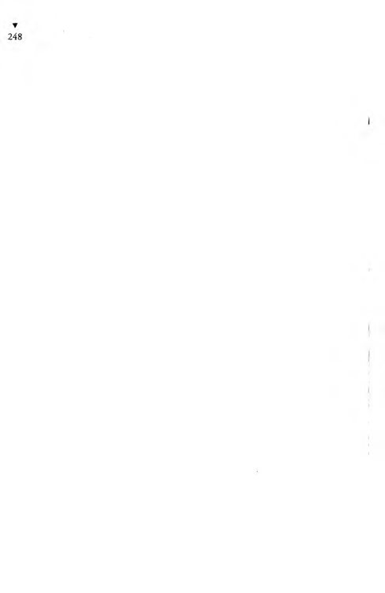
“Islatmaz!” diye bağırdı.
Nasıl olsa beni kovacak. O kovmadan ben bir daha sesim
çıktığınca,
“Islatnır!” diye bağırıp, kapıyı da sert çekerek odasından
çıktım.
İçerki küçük odadan, arkamdan bağıran M üdür Beyin sesini
duyuyordum:
“Bu küçük şişenin içindeki su, bu koskoca odanın döşemesini
ıslatır mı hiç...”
Yanındaki adamın bağırtısını da duyuyordum:
“Ulan, ıslatsın ıslatmasın, kim in bilmemnesinde pezevenk...
Sen işçilerin paraları verilsin demezsen, ben seni bir güzel ıslatayım da gör!..”
Bir şangırtı oldu. Sanırım, M üdür Beyin m antık ölçüsü olan
su şişesi, ikisinden birinin kafasında kırılmıştı. Odasından tam
zam anında çıkmıştım.
Aldım ötemi berimi, ayrıldım. O h be! Ağbiciğim, sıktım di
şimi, tam üç ay dayandım. H içbir odacı bu herifin yanında üç
ay dayanamıyormuş. H er nasılsa, nüfuskâğıdımı sormadan beni
çalıştıran biri çıktı karşıma, orda da ben dikiş tutturam adım.
Sis düdüğü sesli eski sabıkalı,
— Gene ortalarda kaldın, öyle mi? dedi.
— Evet emice, dedi Yaşar.
Koğuştaki hüküm lüler yataklarına çekildiler.
Yaşar o geceyi de, daha çok kazanç yolları düşünmekle geçirdiğinden ancak sabaha doğru uyuyabildi.
Nüfuskâğıtsız İnsan Sokmam Evime
I aşar Yaşamaz, kendine yeni yeni işler bulup gitgide daha çok
para kazandıkça, arkadaşlarına eskisinden daha yoksul görünmeye
çalışıyordu. Bunca kazandığı halde üstüne bir giysi bile almıyor,
eski pılı pırtı giysilerinin söküklerini dikip, yırtıklarını yamayıp
yetiniyordu. Oysa cezaevinde çok darda kalıp, yenice giysilerini
eskici aracılığıyla çok ucuza sattıranlar vardı. İstese, az giyilmiş
bikaç kat giysi alabilirdi. Almıyordu. Çünkü, para kazandığının
bilinmemesi gerekirdi. Bol para kazandığı duyulursa, kazancı
birse, dillerde bin olur, herkesin gözü parasında kalırdı. Koğuş ve
kısım ağaları, kazancından ağalık paylarını isterlerdi. Pay denilen
bu haracı vermek istemezse, yiyeceği tonla sopadan başka, kazanç
yolu kesilir, işi elinden alınırdı.
Ağalar, bibakıma cezaevinde kolluk gücü görevi yapıyor,
cezaevini kendilerince düzene sokuyorlardı. Onlar bu düzeni
kurmamış olsalar, cezaevinde kan gövdeyi götürecekti. Cezaevi
yönetimi de ağaların düzen kurduklarına inanıyordu ki, onların
haraç almalarına göz yumarak izin vermiş oluyordu.
Yaşar Yaşamaz, cezaevinin bu düzenini çok iyi öğrenmişti.
Ağalar kendisine bir iş bulmuş olsalardı, pay istemekte elbet haklı
olurlardı. Ama Yaşar kendisi kazanç yollarını yaratmıştı. Ziyaret
günleri ziyaretçilere cezaevi andacı olarak heykel ve boncuk işleri
satmasına izin vermelerine karşılık, hem kendi koğuşundaki
idareci denilen hükümlüye, hem koğuş ağasına, hem de yine
İdareci’nin aracılığıyla Yarımporsiyon’a, kazancından pay vermekteydi. Ama yemek satışından aldığı komisyondan, tefecilik kazancından, maltız satışlarından, daha bunlar gibi yapmakta
olduğu kazançlı işlerinden, ne diye başkalarına haraç verecekti!
Cezaevinden çıkmasına azkaldığı için, ucuza, elden düşme
bir giysi edinmeyi düşünüp dururken, önüne kendiliğinden
bir yeni kazanç yolu daha açılmıştı. Cezaevinde kullanılmış diş
fırçasından, dahası takma dişten, kullanılmış fıtık bağına dek, akla
gelen gelmeyen herşeyi satan bir hükümlü, av kokusu almış cins
bir tazı gibi, Yaşardaki paranın kokusunu almıştı. Başkalarının
gözüne batmadan Yaşar’a sokulup,
- Yaşar ağbim, elimde düşeş öyle bir elbise var ki, tam sana
göre. Bunca yılın eskicisiyim, anlarım maldan. Gel şu elbiseyi
kaçırma sen. Usta terzi elinden çıkma, birinci sınıf terzilik, ekstra
kumaş. Başkasına gitmesin Yaşar ağbicim, kaçırma şu kelepiri.
“Yaşar ağbicim!” Yaşar Yaşamaz’a cezaevinde ilk kez birisi “ağbi”
diyordu. Yaşar buna pek sevindi. Bunun kendisini tavlamak için
söylendiğini anlamış, ama yine de şişinmişti. Demek Eskici, iyi
bir satıcıydı.
Yaşar, elbiseyi alacak parası olmadığını söyleyince Eskici,
- Parayla değil ki Yaşar ağbicim, dedi, sahibi eroinci olduğundan keriz olmuş, kaça olsa satacak. Parayı hemen istiyor, eroin alacak annadın mı... Vallahi bedavadan ucuz.
Yaşar Yaşamaz, cezaevinde tilkileşmişti. Kendisinde para
olup olmadığını anlamak için Eskiciyi koğuş ağası göndermiş
olabilirdi.
Yaşar,
- Param varsa ciğerime yapışsın! diyerek parası olmadığına
yeminler etti.
Bu kez Eskici daha da sokularak,
- Öyleyse Yaşar ağbicim, dedi, sen bana elli papel ver, ben
alayım elbiseyi. Su içinde bin papele satarım. Parayı kırışırız
seninle.
Kazançlı işti. Yaşar’ın aklı yattı. Ö lüm lük kahinlik ancak
kırkbeş lirası olduğunu söyledi.
- Tamam Yaşar ağbim, ver kırkbeş kâğıdı, bir haftaya kalmaz,
satarım.
- Beşyüzkırkbeş liramı isterim ama...
- Ayıp ettin. Elbette...
Yaşar, işte bu başlangıçla, Eskici’yle ortak oldu. Yaşarın bitek
koşulu vardı: Bu ortaklığı kimse bilmeyecekti.
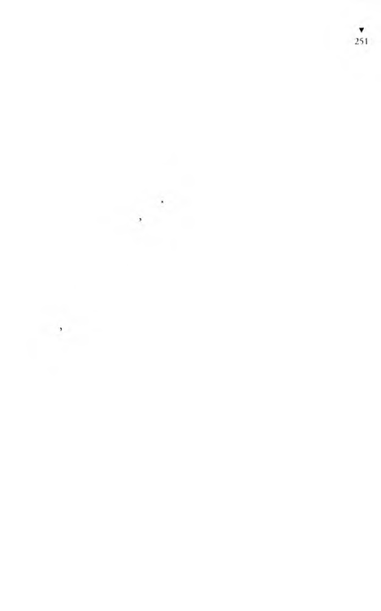
Eskici sattığı şeylerden eskiden yüzde alırken, Yaşarda ortak
olduktan sonra, onları peşin parayla satın alıp, kendi adına satmaya başlamıştı. Yaşar Yaşamaz, bu ortaklık yüzünden de iyi para kazanıyordu. Yeni denilecek denli az giyilmiş iki kat giysi almış,
bunları hiç giymemiş, kimse görmeden bavuluna yerleştirmişti.
Cezaevinden çıkınca, Karakaplı Nizami Beyin karşısına iyi bir
kılıkla çıkmalıydı.
Koğuşta akşam yoklaması yapılmıştı. Hükümlüler öbek öbek
yemeklerini yiyorlardı. Kimisi de yemeğini tek başına yemekteydi.
Birlikte yemek yiyenlerden izmarit Avcısı,
— Yahu, ben bu Yaşarın anlattıklarına inanamıyorum. Uyduruyor gibi geliyor bana... dedi.
Maltızcı,
— Olmayacak şeyler değil ki, dedi, hergün hepimizin başından
geçen şeyler.
— Orası öyle... Ama bunların biri benim, biri senin, biri de
öbürünün başından geçer. Ulan, bunların hepsi de mi Yaşar
Yaşamazın başından geçti be...
Sis düdüğü sesli eski sabıkalı,
- Belki lafı süslemek için allı pullu olsun diye, biraz atıyordur
ama, esasında, bence anlattıkları doğrudur, dedi.
— Nerden belli doğru olduğu?
- Şurdan belli. Benim hapisaneciliğim elli yılı geçmiştir. Biz eski hapisaneciler, hepimiz uydururuz azbuçuk. Ben bunca sabıkalı gördüm, dinledim, ama bu Yaşar gibi anlatanını hiç duymadım.
Hem de cezaevine daha ilk girişi, yani uydurmaya alışık da değil.
Kendisine, koğuşun ve cezaevinin en yaşlısı olduğu için Baba
denilen hükümlü,
- Bence de doğrudur anlattıkları, dedi, çünkü öyle şeyler anlatıyor ki, onları hiçkimse uyduramaz, eski ünlü sabıkalılar bile...
Heykelci,
- Neden cezaevine düştüğünü bir öğrensek, anlattıklarının
doğru olup olmadığını da anlardık o zaman... dedi.
Maltızcı,
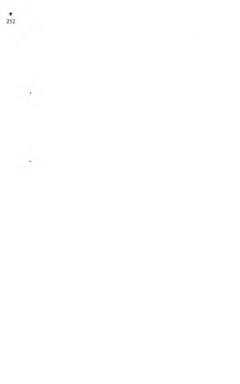
- Herşeyi anlatıyor da, neden cezaevine düştüğünü bitürlü
anlatmıyor... dedi.
Baba öksürükler arasında,
- Yahu, oğlanın bütün anlattığı o be, dedi, başındanberi
nasıl cezaevine girdiğini anlatıyor. Neden girdiğini anlatınca
da, hepsini anlatmış olacak.
idareci, cezaevi yönetiminde çalıştığından kimi gizli şeyleri de
bildiğini sezdirir bir şişinmeyle,
- Doğru mu, yalan mı bilmem ama, dedi, idarede konuşulurken duymuştum, hükümete hakaretten girmiş hapse...
Hamurkâr öyle şaştı ki, birden dizleri üstünde yarı dikilerek,
- Ne? Ne? Hükümete hakaret mi? Kim oluyormuş da hükümete hakaret ediyormuş... dedi.
idareci,
- Valla, öyle bişey çalınmıştı kulağıma.
- Daha nüfuskâğıdı bile yok herifin, bir de hükümete hakaret
edecek ha...
- Ulan, biz hergün hakaret ediyoruz ya...
- Sen bize bakma Baba, evet hergün hakaret ediyoruz ama, bizi
adam yerine koymadıklarından aldırmıyorlar. Polisler bile duymazdan geliyor bizi. Aydın denilenlerden, çok okuryazarlardan biri hükümete hakaret etsin de bak, ne oluyor, adamın tiftiğini atarlar be...
Avcı,
- Yok canım, hükümete hakaret etmiş olamaz, olsa bile öyle
zibidiye kim aldırır da hapse atar... dedi.
Maltızcı,
- Hükümete hakaretten cezaevine düşseydi, bizim koğuşa
atarlar mıydı hiç... dedi.
Avcı,
- Doğru, dedi, o zaman, ya Beyler Koğuşuna yada siyasilerin
koğuşuna verirlerdi.
“Hükümetin manevi şahsiyetine hakaret” suçunu ancak Siyasiler Koğuşundaki aydınlarla, Beyler Koğuşundaki zenginlerin işleyebileceği üzerinde tartışırlarken Kral Sami,
— H adi arkadaşlar, hadi! Yerlerimizi alalım! Yaşar Yaşamaz
programına başlıyooor! diye saslenerek, koğuştakileri yerlerini
almaya çağırıyordu.
Sofralar kaldırılıp, tabak çanak çabucak toplandı.
Yaşar Yaşamaz, dinleyicilerinin ilgisini uyandırmak, koğuşta
sessizliği sağlamak için sazına biriki dokunduktan sonra başladı
anlatmaya:
— “Herşeyin esası mantık!” deyip bana günde belki kırk kez,
“Bu şişedeki su bu odanın döşemesini ıslatır mı, ıslatmaz mı?”
diye soran m üdürün yanından çıktıktan sonra...
Baba,
— Gene kaldın ortada... dedi.
— Evet Baba, iyi bildin. O rtada kaldım...
Hamurkâr,
— Kodeste de olsak, oturup kalkıp durumumuza şükredelim.
Hiç olmazsa nüfuskâğıdımız var... dedi.
Maltızcı,
— Yaşar’ınki nüfuskâğıtsızlık değil ki, dedi, öyle olsa kolay,
yeni bir nüfuskâğıdı çıkarırsın. Ama Yaşar’ı hükümet yaşıyor
saymıyor. Zorluk burdan çıkıyor.
Yaşar,
— Başına gelmeyen bilemez ağbiler, dedi, istemem, düşmanımın bile başına gelmesin. Benimkisi gene neyse... Güher Hanı-
mefendininki benden de beter. Siz bir de Güher Hanımefendinin
başına gelenleri bilseniz.
Hükümlülerden biri,
— O da kim yahu? diye sordu.
— Güher Hanımefendi mi? Benim Anşe, hani Boğaziçi’nde bir
köşkte çalışıyor ya, işte o köşkün sahibi olan kadın. O mantıklı
herifin yanından çıkıp canımı kurtarınca, Anşe’mi bir göreyim
de gönlüm açılsın dedim. Köşke vardım. Akşam oldu olacak...
Benim Anşe’m, herzamanki gibi gene mutfakta, ordan oraya
koşuşup duruyor. Pencerenin camını tıklatmamla öyle bir korktu
ki, “Hayyy!” diye bir çığlık atıp elini göğsüne bastırdı, sandalyeye
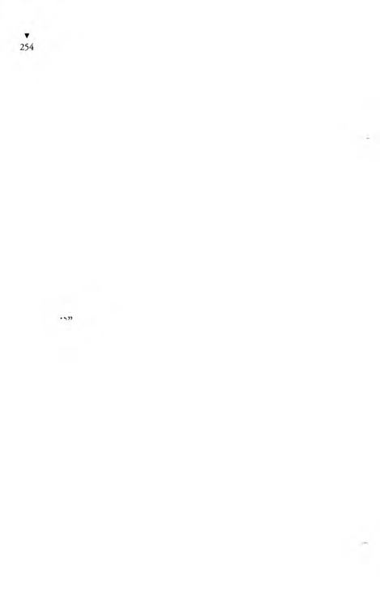
çöktü. Camlı kapıyı açsın diye bir zaman bekledim. Önce su içti,
sonra kapıyı açtı.
“Ne o kız, hem camı tıklat diye kendin dersin, hem de her
gelişimde böyle korkarsın...” dedim.
“Ay aman Yaşar’ım sus, az kala korkudan çocuğumu düşüre
çektim,” dedi.
“Nee! Çocuk mu?” diye öyle bağırmışım ki sevincimden,
Anşe,
“D ur aman yavaş, Büyükhanımefendi duyacak vallaha...”
dedi.
“Kız, gebesin de neden daha önce demedin ki daha çok
sevineyim...”
“Bir işe girip yerleşmeden söylemedim ki, işsizliğinde bir de
baba oldun, çocuğa nasıl bakacaksın diye üzülüp etmeyesin.
Çok şükür şimdi sağlam bir işin var. Aylığın da iyi... Müjdemi
verdim işte. Bir daha camı tıklatayım derken yüreğimi hoplatma,
e mır
Başımdan aşağı soğuk sular döküldü sanki... Siz bendeki şu
talihsizliğe bir bakın... Tam işten çıktığım gün, baba olacağımı
öğreniyorum. Hele bir de şu Anşe’nin inceliğine bakın. İşsizliğimde, baba olacağımı söylemiyor ki, üzülmeyeyim... Ulan dangalak, böyle bir zamanda işten çıkılır mı hiç. Hayatımda ilk
kez bir iş bulmuşum, üstelik baba da olacağım... Neymiş, herif
günde kırk kez, “Islatır mı?” diye sorarmış. Sorsun. Anana sövse
ne gerekir ki, lafla olduktan sonra...
Anşe,
“Ne o sevinmedin mi?” dedi.
Zorla gülümsemeye çabalayarak,
“Hiç sevinilmez mi! Sevindim ki, hem de nasıl...”
“Yüzün ekşidi, hem de sarardı da...”
Kız bana gebe olduğunu müjdeleyince, ben müjdenin arka
sından, işten çıktığımı nasıl söyleyeyim.
“Sende bir durgunluk var...”
“Yok bişey canım...”
“Söylemezsen, ben de sana ikinci müjdemi vermeni...”
“Söyle kız!” diye bunu-kucaklayıp öptüm.
“Hepsi boşuna, benden gizlediğini söylemezsen, ben de
müjdemi vermem.”
Küsmüşüm gibi yapıp sustum.
“Odacısı olduğun müdürün, ikidebir sana ‘Islatır mı, ıslatmaz
mı?’ diye sormasından bıkmıştın da... Hep gelip bana anlatırdın
da... Ben de düşündüm ki...”
“Ne düşündün kız?”
“İkimiz bir yerde çalışırsak daha iyi olur diye düşündüm.”
“İkimizi birden çalıştıracak işyeri nerde?”
“Buldum ben. İkinci müjdem buydu işte! Sana da iş buldum.”
“Nerde?”
“Burda. Büyükhanımefendi, küçük oğluyla kızı da evlenip
gittikten sonra koca köşkte benimle yalnız kaldı. Ayak işlerine
bakacak birini arıyordu. Hem de köşke bekçilik eder, ne de olsa
er kişi, diyordu. Ben de seni söyledim.”
“Neyim diye söyledin?”
“Neyim diyeceğim, nişanlım dedim.”
“Nüfuskâğıdı sormaz mı ki...”
“Burası resmi daire mi ki nüfuskâğıdım sorsun.”
“Ne zaman işe başlayacağım?”
“Hemen...”
Kolundan tutup kendime çektim,
“Demek! Şimdi bu gece ben burda kalacağım, öyle mi?”
dedim sevinçle.
“Yok!” dedi, “Büyükhanımefendi seni görmemiş, olmaz...”
“Ee görsün şimdi işte...”
“Bu saatte olmaz. Yarın sabah geleceksin...”
“Etme Anşe, nasıl olsa işe girince bu köşkte kalmayacak
mıyım...”
“Kalacaksın...”
“Nasıl olsa bu Büyükhanım beni işe almayacak mı?”
“Alacak...”
“Öyleyse akşamın bu zamanında ne diye taaa oralara gidip
sabahtan gene buraya geleyim. Yorulmama değmez. Bırak kalayım
burda...”
“Yok olmaz, Büyükhanımefendi’nin izni olmadan olmaz...”
Ne dediysem kandıramadım domuzun kızını. Ama bu kez
şakadan değil, gerçekten kızdım. Gecenin bir zamanı döndüm.
Devrisi sabah düştüm yola. Köşke vardım. Bu kez, mutfak penceresinin camını tıklatmadım. Doğrudan köşkün kapısına gidip zili çaldım. Çünkü bu kez arada gizlilik ne yok. Anşe kapıyı açtı.
Girdim içeri.
“Büyükhanımefendi’ye söyledim senin geleceğini...” dedi.
“İyi. Varalım yanma da görüşelim...”
“D ur öyle olmaz!” diyerek elimden tutup beni geri çekti.
“Ya nasıl olur?”
“Büyükhanımefendi çok titizdir. Hiçkimseyi odasına ayakkabısıyla sokmaz. Çıkar ayakkabını!”
İşte o zaman ben bir eyvah çektim ki, gözü kör olası felek dc
duymuştur bu eyvahımı. Nasıl eyvah çekmeyeyim arkadaşlar, ben
ayağımı çıkardım mı, köşkü öyle bir koku saracak ki, bu kokudan
o Büyükhanımefendi ölmezse de bayılır. Anşe çok anlayışlı bir
kızdır, daha ben ne olduğunu söylemeden, eyvahımın nedenini
anlayıp elimden tuttu, beni banyoya soktu.
“Ayak havlusu şurdadır. Temiz çorap da getireyim. Sok ayaklarını şuraya da yıka!” dedi.
Dediğini yaptım. İkinci kata çıktık. Büyükhanımefendi’nin
odasına girdik. Allah Allah! Bu nasıl bir oda yahu... Padişahların
yatak odaları gibi desen, padişah odası da böyle olamaz. Bir
masal anlatılmış da ben de anlatılan o masalın içine düşmüşüm
gibi... Duvarlar, kapılar yaldızlı boyalı ya, tavanlar da yaldızlı
ve boyalı... Büyükhanımefendi, öyle şişman, öyle şişman, öyle
şişman ki, odaya girince ben onu ilkin bir denk gibi, üst üste
yığılmış şilteler gibi, eşya kümbeti gibi bişey sandığımdan, dört
biyamma bakınıp odada Büyükhanımefendi’yi aranıyordum,
Anşe beni dürtükleyip, “Bu yana dön!” diye fısıldadı. Çünkü
ben Büyükhanımefendi’yi ngrde göreceğim diye dönenirken,
eşya dengi sandığım kadına arkamı dönmüşüm. Bir de baktım
ki, divanın üzerine yatırılmış o koca denk kımıldıyor, Haliç’teki
mavunalar gibi bişey. Yetmişinde, sekseninde, belki de daha yaşlı...
Anşe’nin, odasından çıkamaz demesini şimdi anlıyorum. Kadın,
şişmanlıktan yarı kötürüm olmuş. Biz odasına girdiğimizde
divana kurulmuştu. Padişah tahtı gibi bir divanı var.
Anşe,
“Büyükhanımefendi, bir akrabam var demiştim ya size, işte
getirdim...” dedi.
“Ne olacak?” diye sordu.
“Hani işçi istemiştiniz ya, köşkte çalışsın diye...”
“Haa, o mu? Yavuklun öyle mi? Nişanlısınız demek... —Bana
başını çevirdi— Gel bakayım, gel yakınıma da seni bir iyice
göreyim.”
Sokuldum. Gözlüğünü değiştirip, alacağı mala bakar gibi,
saçımdan tırnağıma süzerek baktı.
“Adın ne senin?” diye sordu.
“Adım Yaşar.”
“Ben bu köşkte tek başımayım. Kızımla damadım Ameri-
kadalar. Oğlumla gelinim haftada bir gelirler buraya. Anşe ev
işini görüyor. Sen de dışarı işlerine bakarsın, bahçeye, çarşıya,
pazara filan...”
“Başüstüne.”
“Anşe’den çok memnunum. Sen de nişanlısısın, seni de Anşe
salık verdiğine göre, çalış da görelim. -A nşe’ye döndü— Buna
yerini, odasını filan gösterirsin.”
“Gösteririm Büyükhanımefendi.”
Çıktık odasından.
“Kız, bu Büyükhanımefendi kaç para vereceğini demedi ya,
pazarlık ne etmedik, aylığım ne olacak. Beni boğaz tokluğuna
çalıştırmasın...”
Anşe bir kızdı,
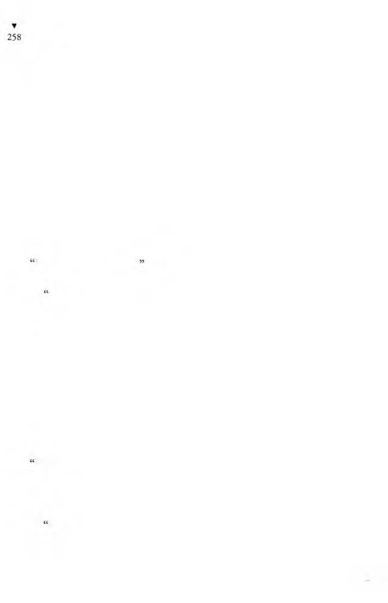
“Sus!” dedi. “Sen kibar insanları nerden bileceksin... Büyük-
hanımefendi hiç pazarlık etmez. Eli açıktır.”
H em en o günden başladım çalışmaya. Anşe’nin dediği çıktı,
çok eli açık bir kadın. Çarşıya, pazara, bakkala, manava gönderirken elime parayı verir. Dönüşte paranın üstünü veririm kendisine.
“Sende kalsın...” der.
Bende kalan paraların üstü, bir memur aylığından çok tutuyor.
Çarşıya, pazara gitmek dersem, yorucu iş değil. Ç ünkü her sabalı
köşke, bakkal, manav, daha öteki esnaf çıraklarını gönderiyorlar.
Benim işim az. Ben de daha çok bahçede çalışıyorum. Ağaçları
buduyorum , otları yoluyorum, çiçekler ektim, onları suluyo-
rum. Eh, gece olunca da Anşe beni eskisi gibi sepetlemiyor. Oh
çok şükür, bir rahatız, bir rahatız ki, sormayın gitsin. Yalnız
Büyükhanımefendi demek dilime zor geldiğinden bikaç kez
“Hanım efendi” dedim diye Anşe beni azarladı.
Buna Hanımefendi dersen, kızına, gelinine ne diyeceksin?
Kızıyla gelini Hanımefendi, bu da büyük olduğundan Büyük-
hanımefendi’dir.”
Anşe’ye neler de öğretmişler, şaştım kaldım. Köşkün oralarda
oturanlar, ta iskeleye dek herkes onu tanıyor ve herkes ona ya
Büyükhanımefendi diyor yada Güher H anım efendi diyor. H erkes saygı duyuyor.
Biz köşkte böylece yaşayıp giderken... Bir sabah köşkün kapısı
çalındı. Hergün o saatte sütçü geldiğinden, süt kabını alıp açtım
kapıyı. Biyandan da Anşe’yle konuştuğum dan başım geriye
dönüktü. Nasıl olsa kapıdaki sütçüdür diyerek süt kabını uzatıp,
Büyükhanımefendi senin sütün bozuk diyor...” diye şaka ettim.
Biz sütçüyle sabahları şakalaşırdık. Sütçü karşılık vermeyince
başımı uzatıp baktım ki, kapıdaki sütçü değil, bir polis. Polisin
yüzünden, benim “sütü bozuk” lafıma kızdığı belliydi.
Çok affedersin, ben sütçü sandıydım...” dedim.
“Güher burada mı?” diye sordu.
Polisin Güher Hanımefendiye, Güher deyişine çok bozuldum.
Ne demek olsun, bütün bu Boğaz köyü insanının “G üher Hanı
ınefendi” dediği bir kadına nasıl “Güher” diyebilir! Hiç olmazsa
“Güher Hanım” de be!
Ben de,
“Burda Güher yok, Güher Hanımefendi var. Bura Güher
1 fanime fendinin köşküdür...” diye terslik ettim.
O gene,
“Ben sana hanım manim sormuyorum. Güher’i soruyorum,
( îüher burda mı?” dedi.
Ben de, inadıma,
“Güher Hanımefendi burda,” dedim.
“Çağır da gelsin bakalım,” dedi.
“Gelemez!” dedim.
“Nasıl gelemez?”
“Basbayağı gelemez... Ne istiyorsanız bana söyleyin, ben çıkar
yukarıya, kendisine söylerim. O buraya gelemez!”
“Neden gelemiyormuş? Hem de uçaraktan gelir...”
“İyi öyleyse, hadi getirt de görelim.”
“Vaaay, ne demek... Yani kanun kuvvetine karşı mı geliyor?”
“Yok canım... Ne diye kanuna karşı gelsin, çok şişmandır da
ondan aşağı inemez. Merdiven inemiyor.”
Ben böyle deyince, sanki çok şaşılası bişey demişim gibi
gözlerini açıp,
“Nasıl merdiven inemezmiş! Genç insan o kadar şişman olur
mu hiç?” dedi.
Bu kez ben şaştım kaldım.
“Hangi genç... Ne genci! Yetmişini, belki de seksenini geç-
kın...
Bir zaman ağzı açık kaldıktan sonra,
“Allah Allah... Allah Allah! Amma da iş...” diye söylenmeye
başladı.
“Ne var ki, niye öyle şaştınız?” diye sordum.
Elinde tuttuğu kâğıt tomarına öteki eliyle vura vura,
“Yahu, bu kâğıtta yirmiiki yaşında diye yazıyor, resmi evrakta
yaşı yirmiiki gözüküyor,” dedi.
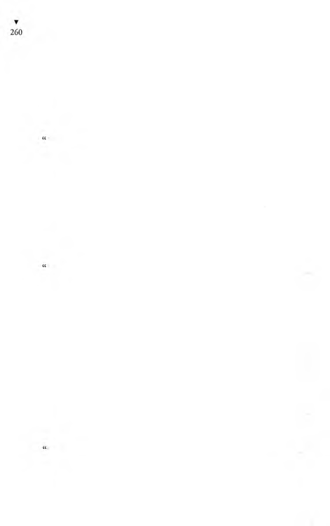
“A beyim, resmi evraka ne bakıyorsun, resmi evraktır, yazar...
O resmi evrak beni de ölmüş gösteriyor, hem de doğmadan önce
ölmüşüm,” dedim.
Şaştığından alt dudağını büzerek,
“Demek, yetmiş yaşında!” dedi.
“Dedim ya, belki de seksen...”
Peki, nasıl olmuş da bu yaşma kadar askerliğini yapma-
%
»
mışr..
Beni aldı bir gülme...
“Kim askerliğini yapmamış?” diye sordum.
Elindeki kâğıttan adı okudu:
“Güher.”
“Siz ne diyorsunuz! G üher H anım efendi, hanımefendi...
Kadın, kadın!”
Zavallı polisi görecektiniz... Büsbütün afalladı.
Bu ne iş, anlamadım. Askerlik şubesi, asker kaçağı diye arı
yor. Öyleyse bu aranan Güher, başka bir Güher olacak. İyi ama,
evraktaki adres de tutuyor. Hadi sen git de söyle kardeşim, söyle
de bir zahmet aşağı kadar geliversin.”
“Dedim ya, gelemez beyim.”
“Sen, polis kapıda bekliyor de, gelir. Bu bir vatani vazifedir,
hepimizin başından geçti. Bundan kaçmak, kurtulmak olma/,
Her nereye kaçsa, devletin kolu yetişir. Nereye saklansa yakalarlar
nasıl olsa. Hadi git söyle de gelsin. Yalnız bir kâğıt imzalatacağım,
o kadar. Hemen alıp askere götürecek değilim.”
Bu sözlerinden belli ki, polis benim demindenberi söyledikle
rime inanmamış, belki de çaktırmadan kendisiyle dalga geçtiğimi
sanmıştı.
Söyledim size, aşağı inemez. Gidip haber vereyim geldiğinizi,
belki sizi çağırır yanma.”
Polis, çokbilmişlikle,
“Hadi hadi, sen git söyle!” dedi.
Büyükhanımefendi’nin odasına çıktım.
“Büyükhanımefendi, bir polis gelmiş, sizin asker kaçağı oldu
ğunuzu söylüyor,” dedim.
»
îlkin ne dediğimi anlamadı. Açıklayınca, öyle bir gülmeye
başladı ki, yaylı divanda hop hop hopluyordu. Büyükhanıme-
fendi’nin böyle güldüğünü hiç görmemiştim.
“Şimdi polis nerde?” diye sordu.
“Kapıda. Sizi istiyor. ‘Gelemez,’ dedim, isterseniz, çağırayım,
gelsin buraya!”
“Gelsin, gelsin... Ama ayaklarını çıkarsın da gelsin!” dedi.
Kapıdaki polise,
“Buyrun yukarıya, Büyükhanımefendi sizi bekliyor,” dedim.
Polis salona girince,
“Yalnız... Çok affedersiniz, ayakkabılarınızı çıkaracaksınız.
Çok sinirlidir. Odasına ayakkabıyla giren olursa kıyametleri
koparır,” dedim.
Benim anladığım, herhangibir eve girmiş olsaydı, dünyada
ayakkabısını çıkarmazdı. Ama köşkün alt salonuna girip de, o
antika eşyaları, nakışları, yaldızları görünce zavallı polis şaşakalıp,
o şaşkınlıkla ayakkabılarının bağlarını çözdü. Merdiveni çıktı.
“İşte, kapısı açık... Gördün mü?” dedim.
Polis,
“Şu battaniyeler örtünmüş kadın mı? Olamaz!” dedi.
Odaya girdik. Büyükhanımefendi hâlâ gülmekteydi.
“Beni askere mi alacaksınız?” diye sordu polise.
Polis,
“Valla, nasıl desem, bilmem ki...” diye kekelemeye başlayınca,
Büyükhanımefendi,
“Nedir, açık söyle...” dedi.
“Sizi görünce işler karıştı da...”
“Kim karıştırmış işleri? Herhalde ben karıştırmadım.”
“Sizi, asker kaçağı diye arıyorlar da...”
Büyükhanımefendi’yi yeniden gülme nöbeti tuttu. Gülmesi
kesilince,
“Sizin karakolun komiseri beni tanır. H ay Allah iyiliğinizi
versin!” dedi ama, öyle bir, “Allah iyiliğinizi versin...” dedi ki,
“H ay Allah belanızı versin!”den çok daha ağır.
Polis, elinde tuttuğu o yazıyı okuyarak,
“Adınız Güher, değil mi?” diye sordu.
“Evet, Güher.”
“Soyadınız?”
“Yekindir.”
“Evet, o da tutuyor, evrakta da G üher Yekindir diye yazılı.
Babanız?”
“Pederim, Tophane Nazırı, Ferik M em duh Paşa merhum.”
“Evet, M em duh... Burda da öyle yazılı.”
Büyükhanımefendi birden sertleşip,
“M em d u h değil oğlum , M em duh değil, M em duh Paşa,”
dedi.
Polis toparlanıp,
“Anneniz efendim?” diye bu kez daha kibar sordu.
Büyükhanımefendi,
“A nnem in adı Vesâmet,” dedi.
Polis cık cık diye şaşma sesleri çıkarıp,
“Herbişey uyuyor, bir kadın olmanız, bir de yaşınız işi bozu
yor,” dedi.
Büyükhanımefendi de,
“Yaa, vah vah, çok yazık!” diye alay etti.
B unun üzerine polis,
“Efendim, karakola nüfuskâğıdınızın bir suretini getirirseniz,
biz de askerlik şubesine yazarız,” dedi.
Büyükhanımefendi,
“A oğlum, işte beni görüyorsun... Artık daha ne diye karakol.ı
geleyim?” dedi.
Polis, önemsiz bir iş olduğunu anlatan bir el sallamasıyla,
“Usulen efendim, usulen bir iş bu...” dedi.
Büyükhanımefendi,
“Dünyada gelemem!” dediyse de boşuna... Polis hergün
kapıda:
,
“Güher Hanımefendi, usulen bir karakola geliversin!”
Artık Büyükhanımefendi’nin de canına tak ettiğinden,
“Madem usulenmiş, eh artık karakola gideyim bari...” dedi.
İyi ama, o koskoca kadın, nasıl merdiveni iner, nasıl arabaya
biner, nasıl arabadan iner de karakola girer... Kadının biyanına
ben geçtim, biyanına Anşe... Yahu bişey değil, Anşe, Büyükha-
nımefendi’nin ağırlığından çocuğunu düşürecek. Anşe tutmasa,
Büyükhanımefendi, benim bibaşıma kaldırabileceğim bir ağırlık
değil... Ben diyeyim yüzelli kilo, siz deyin ikiyüz kilo... Büyük-
hanımefendi’yi sırtıma almaya kalksam, ayıp olacak... Ayıp
olacak dersem, hani taşıyamayacağım da ondan ayıp olacak. Bir
de merdivenden paldır küldür düşersek, ben altında ezilir, yamyassı olurum. Benim korkum, Anşe’nin çocuğunu düşürmesi...
Herneyse, ağırlığının çoğunu ben üstüme alaraktan, arabayla
Büyükhanımefendi’yi kan ter içinde karakola getirdik. Komiserin
odasına girince, sanki biz onu taşımamışız da, o bizi taşımış gibi,
“O f aman, çok yoruldum ...” deyip komiserin masasının
karşısındaki koltuğa kuruldu. Kuruldu dediysem, öyle kolayına
kuruldu sanma. Çünkü, değirmentaşı gibi kalçasının koltuğa
sığışması epiy zor oldu. Komiser onu gerçekten tanırmış. “Aman
Güher Hanımefendi...” diyerek çevresinde dönenip duruyor.
“Aman Güher Hanımefendi, bağışlayın bizi... Vallahi, nasıl
özür dileyeceğimi bilemiyorum. Çok zahmetlere katlandınız. Sizi
buraya kadar rahatsız etmek istemezdim ama, benden iyisini
bilirsiniz ya efendim, usulen bitakım işlemler gerekiyor...”
Ne diller döküyor, ne diller... Ama Büyükhanımefendi hiç
yüz vermiyor:
“Peki peki... Buncaydın kadınıyım, beni erkek miyim, kadın
mıyım diye görmek için buraya kadar getirttiniz. Nüfuskâğıdımın
suretini istemişsiniz. Getirdim işte, buyrun!”
Komiser, nüfuskâğıdının suretini aldı. Büyükhanımefendi’yi
yumuşatmak için,
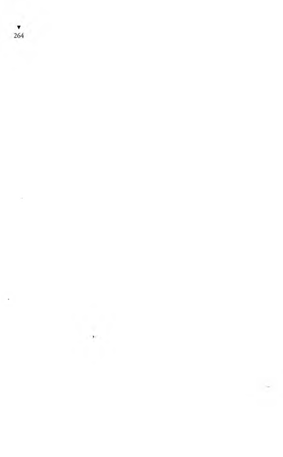
“Ne emredersiniz? Çay mı, kahve mi, yoksa soğuk bir içecek
mi?” diye sordu.
Büyükhammefendi,
“Eksik olmayın oğlum, hiçbişey istemem. İşlem dediğiniz şey
olduysa biz gidelim. Buraya kadar bin zorlukla geldim,” dedi.
Bunun üzerine komiser,
“Bir dakika Güher Hanımefendi, bir tutanak yapacağız da...”
dedi.
Büyükhammefendi yavaş yavaş gene kızıyordu,
“Ne tutanağı a oğlum?” dedi.
Komiser,
“Kadın olduğunuza dair bir tutanak yapalım ki burda, ilerde
sizin için kolaylık olur. Bir daha sizi rahatsız etmezler,” dedi.
“Aaaa! Daha neler! Bu yaşımdan sonra kadın olduğumu karakol
tutanağıyla mı ispat edeceğim? İstemem tutanak mutanak!”
Komiser alttan alarak,
“Güher Hanımefendi, bu tutanak, usulen bir tutanak. Hiç
kuşkusuz kadın olduğunuz herkesçe biliniyor. Ama biz usulen bir
tutanak yapıp kadın olduğunuzu belgeleyelim ki, ilerde başınıza
başka zorluklar çıkmasın,” dedi.
Büyükhammefendi, ister istemez boyun eğip,
“Aman peki, mademki usulenmiş, ne isterseniz yapın...”
dedi.
Komiser söyledi, bir polis memuru yazı makinesinde yazdı:
“Falan yerde, falan adreste, falan numaralı evde oturan Bayan
Güher Yekindirin kadın olduğunu belgeleyen işbu tutanak
tarafımızdan düzenlenerek...”
Tutanağı, karakoldan iki polisle komiser imzaladıktan başka,
Anşe’yle bana da imzalattılar. Yarısından çoğunu ben taşıyarak,
birazını Anşe, geri kalanını da kendisi taşıyarak Büyükhanımc
fendi’yi arabaya bindirip köşke getirdik. En zoru, merdiveni
çıkartmak. İki kez azkaldı, üçümüz birlikte merdivenin üst
başından yuvarlanacaktık. Büyükhanımefendi’yi divana uzattık
ama, biz de bittik.
Aradan bir zaman geçti, o polis gene kapıya geldi. Büyükhanı-
mefendi’nin “usulen” askerlik fubesine dek gitmesi gerekiyormuş.
Önemli bişey değilmiş, usulen gidilecekmiş. Büyükhammefendi
bu “usulen” lafına ilkin kızıyordu ama, sonra sonra alıştı,
“Eh, mademki usulenmiş, öyleyse gidelim...” dedi.
Askerlik şubesi, karakol gibi yakın yerde değil ki... Büyükha-
mmefendi’yi arabaya bindirip askerlik şubesine götürdük. Bu iş,
şimdi burda söyleyiverdiğim gibi kolay olsa ne iyi... Büyükhanı-
mefendi’yi arabaya sokabilmek öyle zor ki... Karakola gidişimizde
denediğimiz için, bu kez kapısı geniş bir araba tuttuk.
Her pazar günü, oğluyla gelini, torunları köşke gelirler. Kimi
hafta, bir geceyi köşkte geçirirler. Büyükhammefendi, kendisini
askere çağırdıklarını, oğluna, gelinine kesinlikle söylemiyor. An-
şe’ye, bizim de bu konuda ağzımızı açmamamızı söylemiş. Oysa
oğluna söylese, özel arabası olduğundan, annesini heryere götürür.
Anşe’ye bakarsan, kadın olduğunu ispat etmekten utandığı için,
bunu ne oğlunun, ne gelininin, ne de başkalarının duymasını
istemiyormuş. Bunca yılın Büyükhanımefendisi’ni askere alıyorlar
diye duyuldu mu, rezalet...
Askerlik şubesi başkanının odasına girince,
“Beyfendi, usulen musulen diye diye, sonunda beni işte
askerlik şubesine kadar getirdiler,” dedi.
Askerlik şubesi başkanı,
“Bir yanlışlık olduğu ortada efendim, düzeltiriz...” dedi.
“Ben yaşlı bir kadınım. Oğlum, kızım, torunlarım var. Bu ya
şımdan sonra başıma bir de askerlik çıkardılar, asker kaçağıymışım.”
“Sinirlenmeyin Hanımefendi.”
“Nasıl sinirlenmem a oğlum... Maşallah albay olmuşsunuz,
sizi bu yaşınızda, erkek değilsiniz, kadınsınız diye askerlikten
çıkarmaya kalksalar sinirlenmez misiniz... İşte onun gibi bişey
benimki de... Ben, Tophane Nazırı Ferik Memduh Paşanın
kızıyım. Eşim de generaldi. Merhum Halim Paşanın eşiyim.”
Büyükhammefendi bunu söyleyince, albay birden yerinden
fırlayıp,
“Aman, ne diyorsunuz efendim...” diyerek, Büyükhanımefen-
di’nin ellerine sarıldı; bir elini bırakıp öbürünü öpüyor, biyandan
da konuşuyor:
“Ah müsaade buyrun, müsaade buyrun da elinizi öpeyim.
Halim Paşa merhum benim velinimetimdir. Sizi de tanırım Hanımefendi. Teğmenliğimde, Halim Paşanın hizmetindeydim.”
Albay eski bir tanış çıkınca Büyükhanımefendi biraz rahatladı.
“El öpenlerin çok olsun... Herkes de böyle senin gibi, tanıyoruz, biliyoruz diyor da, sonra gene de asker kaçağısın, hadi askere, diyorlar.”
“Üzülmeyin efendim.”
“Üzülünmeyecek gibi değil ki... iki aydır bu askerlik işiyle
uğraşıyorum. İyi ki çevremde tanınan bir kadınım. Yoksaa,
yaşıma, kadınlığıma filan bakmayacaklar, bağırta çağırta askere
alıp kışlaya sokacaklar.”
Başkanın gülmemek için kendini zor tuttuğu belli.
“Ne yazık ki, arasıra böyle yanlışlıklar oluyor efendim. Sizinki
o kadar önemli değil. Çabuk düzelir. Yalnız sizden bir ricam var.”
Büyükhanımefendi,
“Estağfurullah. Nedir?” diye sordu.
Şube başkanı,
“Usulen nüfus müdürlüğüne kadar bir gidip, kayıttaki bu
yanlışlığı düzelteceksiniz,” dedi.
Büyükhanımefendi,
“Ay şimdi çat diye çatlayacağım... Ay aman baygınlıklar geliyor.
Ah oğlum bana bir bardak su!” dedi.
Albay zile bastı, gelen ere, çabuk bir bardak su getirmesini
söyledi. Er odadan çıktı, bitürlü gelmez... Büyükhanımefen-
di’yi sinirden bir hıçkırık tuttu ki, kadın nerdeyse boğulacak...
Zavallı,
“Su, su!” deyip duruyor.
Albay gene zile bastı. Az önceki er gene geldi. Albay, albayca
sövdükten sonra,

“Ulan bu su nerden geliyor... Nerde su?” diye bağırdı.
Zavallı er titreyerek,
#
“Albayım sular akmıyor,” dedi.
Albayın,
“Tüh, kahveden alın... İyi su bulun! Meyve suyu, gazoz getirin!” demesine karşı er,
“Sular sabahtan kesildiğinden albayım, hiçbir yerde içilecek
hiçbişey kalmamış...” dedi.
Albay, eri kovdu. Anşe, çantasından kolonya şişesini çıkarıp
Büyükhanımefendi’nin şakaklarını, bileklerini ovdu da kadıncağız
kendine gelir gibi oldu. Albaya,
“A oğlum, karakol benim kadın olduğumu bilir, ama usulen
gene de tutanak yapar. Tutanak da işe yaramaz, beni usulen askerlik şubesine gönderir. Siz daha teğmenliğinizden benim otuz yıl önceki halimi bilirsiniz, gene de usulen nüfus müdürlüğüne
gönderirsiniz. Bu nasıl iştir hiç anlamıyorum,” dedi.
Askerlik şubesi başkanı,
“Usulen efendim, usulen...” diyerek Büyükhanımefendi’yi
avutmaya çalıştı.
Artık o gün nüfus müdürlüğüne gidecek hali kalmadığından,
Büyükhanımefendi’yi gene arabayla köşke getirdik.
Allahın bildiğini kuldan saklayacak değilim ya, Büyükha-
mmefendi’nin başına gelenleri gördükçe, dünyada benden de
beterleri varmış diyerek içimden seviniyorum. Kötü ama, doğrusu
bu... Bana, yaşamıyorsun derler, seksen yaşındaki zengin bir
kadını, sen kadın değil erkeksin diye askere almaya kalkarlar.
O nun durumu benimkinden de beter.
Bu başına gelenlerden sonra sinirleri bozulduğundan, Bü-
yükhanımefendi’ye hergün doktor geliyor. Buyüzden nüfus
müdürlüğüne de götüremedik. Götüremedik ama, kapımızdan
polis eksik olmuyor. Bu kez polise inzibat eri de eklendi. “Nüfus
kaydının düzeltilmesi gelmediğinden, askere almak zorunda kalacağız...” diyorlar. Evet, inanılır şey değil... Büyükhanımefendi öyle kızıyor ki,
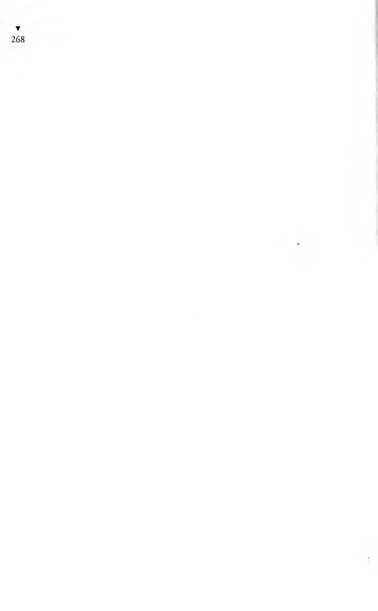
“Yürüyebilsem, işte geldim, alın askere götürün. Ne yapacaksanız yapın, derim. İyice çıksın rezalet ortaya! Ama ne yapayım ki, yürüyemiyorum,” diyor.
Baktı ki olacağı yok, nüfus müdürlüğüne gitti, yani götürdük.
Nüfus Müdürü, Büyükhanımefendi’yi görünce,
“Aman Güher Hanımefendi...” diyerek koşup elini öptü. Bu
kadını da tanımayan yok. Nüfus Müdürü, daha çocukluğundan
tanırmış Büyükhanımefendi’yi. Çok iyiliklerini görmüş. Eski
günleri anlatmaya başladı. Çay ne ısmarlamak istediyse de Bü-
yükhanımefendi istemedi.
“Emrediniz efendim, buyrun!” dedi.
Büyükhammefendi de başına gelenleri anlatıp kendisini askerlik şubesinden usulen buraya gönderdiklerini, nüfustaki kayıt bulunup düzeltilmezse hemen askere alacaklarını söyledi.
Nüfus Müdürü gülümseyerek, o da tıpkı askerlik şubesi başkanı gibi, arasıra böyle yanlışlıkların olduğunu söyledikten sonra,
“Merak etmeyiniz efendim, şimdi kayıtları getirtir, yanlışlığı
bulur, düzeltiriz...” dedi.
Büyükhammefendi,
“Hay Allah senden razı olsun evladım... Tuttuğun altın olsun...
Allah gönlüne göre versin...” diye arka arkaya hayır dualarını
dizdi.
Nüfus Müdürü, bir memurunu çağırtıp, aranacak adı, notlarını
verdi.
“Çabuk bulun!” dedi.
Çok sürmedi, memur koltuğunun altında kalın ve büyük bir
defter, bir de kâğıda yazılmış notlarla geldi. Memurla müdür
bisüre fısıldattılar, kıs kıs da gülüştüler. Memur gidince, Nüfus
M üdürü gülümseyerek, Büyükhammefendi’ye,
“Efendim, şimdi anlaşıldı,” dedi.
Büyükhammefendi çok sevinçli,
“Oh oh... Elbet anlaşılır. Boşuna beni eziyete soktular. Neymiş
evladım?” dedi.
Nüfus M üdürü gene gülümseyerek,
“Küçük bir yanlışlık olmuş Güher Hanımefendi,” dedi. “ Bakınız, doğum tarihiniz 1301 yâzılacakken, yanlışlıkla 1351 yazılmış.
Yani Güher Hanımefendi, yetmişiki yaşınızdayken, yirmi i k i
yaşında oluyorsunuz. Sizi elli yaş birden gençleştirmişler.”
Büyükhammefendi işinin görülmekte olduğuna öyle sevinmişti
ki, bu şakaya kahkahayı basıp,
“Kâğıt üstünde gençleştirmek neye yarar, beni gerçekten
gençleştirsinler ki, aferin diyeyim onlara...” dedi.
Nüfus Müdürü,
“Nüfus kütüğünde yazılı adınız Güher’i de erkek adı sanmışlar.
Yirmiiki yaşında bir erkek de askerlik yoklamazsım yaptırmamışsa,
asker kaçağı sayılır.”
Hep birlikte gülüştüler. Anşe’yle ben, saygı gereği gülüşmedik.
Büyükhammefendi,
“Peki, kim yapmış bu yanlışlığı?” diye sordu.
Nüfus Müdürü,
“O zamanki dalgın bir memur... Aradan ltaç yıl geçmiş, kim
bilir kimdir, nerdedir şimdi. Çoktan emekli olmuştur.”
“İyi güzel de ne yapacağız şimdi?”
Büyükhanımefendi’nin bu sorusuna N üfus Müdürü,
“Sorun aydınlandı çok şükür. Şimdi kolay,” dedi.
Büyükhammefendi,
“Öyleyse, müsaadenizle biz gidelim oğlum ...” diye yekindi.
Ben hemen koluna girdim.
Nüfus Müdürü,
“Bir saniye efendim,” dedi, “durum biztim için aydınlandı
ama... Yalnız, sizin bu yanlışlığı resmen d e düzeltmeniz için
usulen mahkemeye başvurmanız gerekiyor.”
Büyükhammefendi,
“Ay şimdi çıldıracağım!” diye bir çığlık attı.
Nüfus Müdürü, yatıştırmak için,
“Önemli bir mahkeme değil Güher Hanımefendi, usulen bir
mahkeme...” dedi.
Büyükhanımefendi,
“Yanlışlığı ben yapmadım ki efendim, ne diye ben mahkemeye
gidecekmişim. Kim yapmışsa yanlışlığı, onu verin mahkemeye!”
dedi.
“Askere alınacak olan yanlışlığı yapan değil ki... Sizsiniz. Yanlışlığı yapan memur, kim bilir öldü mü kaldı mı şimdiye dek...
Hatta, o memur bile bulunsa, mahkeme kararı olmadan, o da
düzeltemez kendi yaptığı yanlışlığı...”
“Siz beni tanıyorsunuz a oğlum... Yaşımı biliyorsunuz. Kadın
olduğumu görüyorsunuz. Daha ne mahkemesi?..”
“Arz ettim efendim, usulen bir mahkeme bu... Sizi tanımaz
olur muyum, ama elden ne gelir... Mahkeme kararı olmadan
biz kayıttaki yanlışlığı düzeltemeyiz. Usul böyle... O nun için siz
usulen mahkemeye başvuracaksınız.”
Büyükhanımefendi,
“İyi ama evladım,” dedi, “köşkün kapısında hergün polis,
inzibat bekliyor. Usulen musulen derken, bu yaştan sonra beni
asker kaçağı diye yakalayıp vallahi kışlaya sokacaklar.”
Nüfus Müdürü ellerini ovuşturarak,
“Elden bişey gelse niçin yapmayalım a efendim, hem de
size...” dedi.
Büyükhanımefendi’yi gene bin zorlukla arabaya sokup köşke
getirdik. Arabadan zorla çıkarıp odasına aldık. Anşe yanında
kaldı. Limon kolonyasıyla masaj yapıyor Anşe... Ben dışarda,
salondaydım. Artık dayanası, direnci hiç kalmamış ki, gelinine
telefon etmiş. Ben onun telefonda gelinine söylediklerini, salondan duyuyordum. Kızmıştı, bağırıyordu:
“Alooo... Alooo... Telefon gibi senin Allah belanı versin...
Kızım, kızım beni duyuyor musun? Dediklerimi anladın mı
iyicene... Beni askere almaya kalkıyorlar. Evet... Alacaklar da...
Vallahi. Şaka değil. Asker kaçağıymışım. Hergün kapıya polis
geliyor. Alooo... Ha? Oğlum eve gelince söyle, bana hemen
telefon etsin. Canım, bilmez olurlar mı beni, herkes biliyor.
Karakoldan da tanıyorlar tabii... Askerlik şubesinin başkam da
tanıdık çıktı. Sonra nüfus m üdürü de bizim mahalledenmiş.
Hepsi de bişeyler yapmak istiyof ama, hiçbirinin elinden bişey
gelmiyor. İşte, usulen böyleymiş. Kocana söyle, bana acele bir
avukat tutsun. Ayol, vallahi şaka etmiyorum, gülme... Şimdiye
kadar size söylemek istemedim ama, baktım olacak gibi değil.
Haberiniz bile olmadan, bir de bakacaksınız ki, beni askere
almışlar. Amerika’ya da telgraf çekeceğim, artık kızım mı gelir,
damadım mı gelir, bilmem. Hepiniz elbirliğiyle bişeyler yapın
da, bu yaşımdan sonra beni askere gitmekten kurtarın. Kızım
atlasın uçağa, gelsin Amerika’dan. İşin şakası yok, usulen musulen
diye bunlar beni askere alacaklar vallahi. Hadi gülegüle kızım...
Çocukları öp benim için...”
İnsan kendini görmüyor da, başkalarını görüyor. Sanki benim
durum um daha iyiymiş gibi, Büyükhanımefendi’nin telefon
konuşmasını dinlerken gülmekten kırılıyorum. Sesini duydum,
beni çağırıyordu:
“Yaşaar!”
Vardım odasına.
“ Buyrun Büyükhanımefendi.”
Anşe, omuzbaşlarını ovmaktaydı.
“Dur biraz bekle de, damadıma bir telgraf yazayım, postaneye
götür ver,” dedi.
Anşe onun omuzbaşlarını, boynunu ovmaktayken, ben bu boş
zamanı fırsat bilip kendi derdimi açayım, dedim.
“Büyükhanımefendi!”
“Efendim.”
“Benim de bir derdim var da...”
“Hah, tam zamanı işte, benim derdim bitti, sıra şimdi senin
derdine geldi.”
“Benimki de sizinkine çok benziyor da...”
“Söyle bakalım, neymiş derdin?”
“Nüfus müdürlüğünde size demişlerdi ya... Benimki de işte
öyle...”
“Yani?..”
“Ben yaşamıyorum...”
“Aaa, delinin zoruna bak...”
“Yaşamıyorum, çünkü, nüfus kaydımda, Çanakkale Savaşı’nda
şehit düşmüşüm diye gösteriliyor.”
“Ayol, Çanakkale Savaşı’nda daha sen doğmamıştın bile...”
“Askerlik şubesindeki kaydımda da, Dersim Harekâtı’nda
öldüm diye göstermişler.”
Büyükhammefendi, aklımdan zorum mu var diye, Anşe’nin
ellerinin altından bana yan yan bakıyordu.
“Eee?” diye sordu.
“İşte böyle... İki ayrı yerde şehit oldun diye bana nüfuskâğıdı
vermiyorlar.”
“Niye?”
“Yaşamıyorum diye...”
“Ay senin nüfuskâğıdın yok mu şimdi?”
“Yok... Yok da, kendi kendime diyorum ki, siz avukat tutunca,
o avukat benim işime de bakar mı, diyorum.”
“Dur hele şimdi. Aklımı karıştırma da şu telgrafı yazayım,”
deyip Anşe’ye, önüne tekerlekli masayı çektirip telgrafı yazdı.
Postaya götürmem için bana verdi. Telgrafında damadına, nüfus
kaydındaki bir yanlışlık yüzünden asker kaçağı diye askere almaya
kalktıklarını, yanlışlığı düzeltmek için İstanbul’daki avukatına
yazmasını, tatil zamanı olduğundan kendilerinin de gelirlerse
iyi olacağını bildiriyordu.
Büyükhanımefendi’ye avukat tutuldu. Mahkemede dava açıldı.
Duruşma başladı. Büyükhammefendi mahkemede yargıca,
“Durum ortada. Siz de görüyorsunuz. Ben çoluk çocuk, torun
sahibi yaşlı bir kadınım. Herkes biliyor bunu. Ama gene de usulen, usulen diyerek bir yer başka yere, orası öbür yere gönderiyor.
Usulen mahkemeye kadar getirdiler beni. Bu ne biçim usulendir
hiç anlayamadım. Ben artık söz bulamıyorum, avukatım konuşsun,” dedi ama, değme avukat onun gibi konuşamaz.
Avukat da avukatça bişeyler söyledi. Ne dediğini ben anlamadım ama, yargıç herhalde onun dilinden anlamıştır. Yani,
nüfustaki yanlışlığın düzeltilmesi için “adaletinize sığınıyoruz”
filan gibi sözler etti.
»
Yargıç herkesi dinledi dinledi, sonunda,
“Karar!” dedi.
Orda bulunanlarımız kararı dinlemek için ayağa kalktık. Yargıç
kararını söyledi:
“Müracaat sahibinin iddiası üzerine, yaşının yetmişiki olup
olmadığının tespiti için göstereceği tanıkların dinlenmesine ve
cinsiyetinin tespiti için tam teşekküllü bir sağlık kurulundan
rapor getirmesine ve duruşmanın falan tarihe...”
Büyükhammefendi yargıca,
“Aman efendim, bu yaştan sonra kadınlığımı ispat için bir de
hastanelere mi gideceğim, doktorlara mı çıkacağım?” dedi.
Büyükhammefendi böyle demese, ben yargıcın kararından
kadıncağızın hastaneye gidip kadınlığını muayene ettireceğini
anlayamayacaktım.
Yargıç, Büyükhanımefendi’ye,
“Önemli değil ki, usulen bir muayenedir,” dedi.
Köşk, Güher Hanımın kızı, damadı, oğlu, torunlarıyla doldu.
Tatil için Amerika’dan damadıyla kızı, öbürlerinden geç geldiklerinden, damat olup bitenleri sonradan öğrendi.
“Hiç böyle rezalet olur mu! Beceriksizlik etmişsiniz,” diye
Büyükhanımefendi’nin oğluna kızdı.
Kendisi işe sıvandıysa da o da bişey beceremedi. Önce, Bü-
yükhanımefendi’nin yetmişiki yaşında olduğunu mahkemede
söyleyecek tanık bulunamıyor. Çünkü bir tanığın, Büyükhanı-
mefendi’nin yetmişiki yaşında olduğunu söyleyebilmesi için,
kendisinin enazından doksan yaşında olması gerekir. Doksan
yaşında tanığı nerde bulacaksın? Tanıklık için bulunanlar, Bü-
yükhanımefendi’den yaşları küçük olduğundan, kimisi, “Mahkemeden korkarım,” diyor.
Damat onlara,
“Canım efendim, bu gerçekten bir tanıklık değil ki, usulen bir
tanıklık...” diye yalvarıyorsa da, kimseyi tanıklığa getiremiyor.
Doksan yaşında iki tanıdık kişi bulundu ama, onlardan biri
bunak olduğundan mahkemede ne diyeceği hiç belli olmazmış.
Sözgelişi yetmişiki yaşında diyeceği yerde, iki yaşında da diyebilirmiş. Öbürüyse ayağa bile kalkamıyor, üstünü başını kirletiyormuş
ki, mahkemede hiç olacak şey değil. Sonunda zar zor iki tanık
bulundu. Ama bir de hastanede muayene işi var, hem de büyük
devler hastanesi olacakmış. Oğlu, kızı, gelini, damadı, torunları
köşke gelince, Büyükhanımefendi küçük çocuk gibi şımardı,
“Ben bu yaşımdan sonra hekimlere kadınlığımı muayene
ettiremem!” diye tutturdu.
Çocukları yalvarıyor:
“Anneciğim, bu gerçekten bir muayene değil ki... Duydun sen
de yargıcın söylediğini; usulen bir muayene bu.”
Büyükhanımefendi’nin yirmiiki değil, yetmişiki yaşında olduğunu, erkek değil, kadın olduğunu herkes biliyor ama, gene de usulen birbirinin üstüne atıyor.
Büyükhanımefendi’yi hastaneye götürdük. Ama bu kez kalabalığız. Herkes doluştu hastaneye. Büyükhanımefendi’yi gene An-
şe’yle ben, ikimiz taşıyoruz. Yalnız onlar durmadan buyuruyor:
“Aman, dikkat edin!”
“Yavaş olun!”
“Çekiştirme öyle...”
“İnciteceksin, yavaş!”
İşte onların yardımı da öyle.
Herneyse... Bir hekim baktı Büyükhanımefendi’ye, ama siz
bana ben size iki gözle nasıl bakıyorsak, işte öyle baktı. Raporu
verdi. O nun verdiği raporu, Büyükhanımefendi’yi görmeden,
öbür hekimler de imzaladı. Çünkü bu usulen bir imzaymış.
Yargıcın karşısına gidildi. Tanıklar dinlendi. Rapor okundu.
Doğrusu ya, benim hiç um udum yoktu. Ama mahkeme,
Büyükhanımefendi’nin kadınlığına karar verdi. Böylece Bü-
yükhanımefendi, vatani vazifesini yapmaktan kurtuldu. O gece
köşkte keyifle yenildi, içildi. Konuklar da çağırılmıştı. Ertesi gün
de hepsi yerlerine gittiler. Köşkte gene biz bize kaldık.
Büyükhanımefendi askerlik yapmaktan kurtulunca, benim
içime um ut düştü, artık nüfuskâğıdımı ben de alırım diye...
biiyükhammefendi’nin avukatı belki bana da yardım eder diye,
bigün beni odasına çağırdığında,
“Gözünüz aydın. Çok üzüldünüz ama, sonunda yanlışlık
düzeldi ya çok şükür,” dedim.
“Ama ben de bittim Yaşar oğlum,” dedi.
“Geçende size söylemiştim, benim de başımda sizinkine benzer
bir dert var,” dedim.
“Haa, sahi bişeyler söylüyordun yaşamıyorum filan diye...
Neydi senin derdin?”
“Anlatmıştım.”
“Aman o sıralarda ben ne anlıyordum ki... Anlat bir daha
şunu.”
“Benim de nüfus kaydımda bir tarih yanlışlığı yapmışlar.
Buyüzden bana bitürlü nüfuskâğıdı vermiyorlar.”
Sanki köşkün içinde az sonra patlayacak bir bombanın haberini vermişim gibi, öyle bir korkuya kapıldı ki, karşısında onca zamandır hizmetinde bulunan ben değil de, sanki bir korkunç
canavar varmış gibi kendini geri çekerek,
“Şimdi senin nüfuskâğıdın yok muuu?” diye acı bir çığlık
attı.
“Yok efendim,” dedim.
“Ama nasıl olur? Hiç nüfuskâğıtsız insan olur mu? Daha neler...
Ben nerden hileydim senin nüfuskâğıtsız olduğunu...”
Böyle dedikten sonra birden, cıyak cıyak bağırarak Anşe’yi
çağırdı.
Anşe koşarak geldi. Öyle koşmuş, merdiveni öyle hızlı çıkmış
ki, soluk soluğaydı.
Büyükhanımefendi Anşe’ye,
“Neden sen bana bu adamın nüfuskâğıtsız olduğunu söylemedin?” diye bağırdı. Öyle sert bağırdı ki, Anşe ağlamaya başladı.
Büyükhanımefendi bar bar bağırıyordu:
“İstemem! Nüfuskâğıdı olmadığım bilseydim, dünyada evime
almazdım. Dünyada istemem. Olmaz...”
Ben,
“Ama Büyükhanımefendi...” diye durum um u anlatmaya
çalıştıkça, o büsbütün sesini yükseltiyordu:
“Ne diye şimdiye kadar söylemedin nüfuskâğıdın olmadığını?
Hırlı mı hırsız mı olduğunu, kimin nesi, neyin nesi olduğunu
nerden bileyim? Seni daha bu eve alırken söylemeliydin bunu...
Artık bu evde çalışamazsın. Nüfuskâğıtsız insanı evimde bir
dakika tutamam.”
“Büyükhanımefendi, bişey diyeceğim, az müsaade et... Ben
almıyor değilim ki, ben istiyorum ama, bana nüfuskâğıdı vermiyorlar. Nüfuskâğıdım olunca ben değişecek, başka adam olacak değilim ki...”
O gene bildiğini okuyor:
“Olsun, ne olursa olsun, her insanın usulen bir nüfuskâğıdı
olmalı... Mademki böyle bir usul konmuş, öyleyse usulen herkesin
bir nüfuskâğıdı olacak...”
Anşe’yi görseniz yüreğiniz parçalanırdı. İki gözü iki çeşme
ağlayarak Büyükhanımefendi’nin ayaklarına kapanıyor, yalvarıyor. Ama Büyükhanımefendi, sanki kendi başına aynı şeyler gelmemiş gibi,
“Herkesin usulen bir nüfuskâğıdı olmalı. İstemem!” diyor da
başka bişey demiyor.
Ne dersiniz, beni o gece bile evinde yatırtmadı.
“Ben nüfuskâğıtsız insanla bir evde kalamam geceleyin...”
dedi.
Anşe’min gözleri ağlamaktan yumruk yumruk şişti.
Yaa, işte böyle ağbiler, her insanda usulen olması gereken
nüfuskâğıdım olmadığından ordan da kovuldum.
Yaşar Yaşamaz susunca, koğuştakilerden koro gibi,
- Haydaaaa! sesi duyuldu.
Fazladan Üç Ç ocuk
O sabah Avcı’nın işçisi olan îzmaritçi tahliye edilmişti. İzmaritçi
izmarit toplamakta büyük ustaydı. Çünkü, yalnız cezaevinde
değil, dışarda da yıllardanberi bu işi yapıyordu. Yaşı elliye yakındı, yani aşağı yukarı yarım yüzyıllık serseriydi. Çok gururlu olduğundan yerden izmariti almak için eğilmez, ucunda sivri çivi
bulunan bastonla alırdı. Ucu sivri bastonu, sanki av tüfeğiymiş
yada oltaymış gibi kullanır, kuş vurur, balık avlar gibi, bastonuyla
yerden izmariti kaldırır alırdı.
Cezaevine girerken, bastonunu yanında bırakmadıkları için,
izmaritçi içerde kendisine yine ucu çivili sopadan bir baston
yapmıştı. Bahçede öteki hükümlüler volta atarken, izmaritçi,
yazın akşam gezintisine çıkmış zampara kibar beylerin baston
sallamaları gibi, ıslık çala çala sopasını sallardı. Cıgara içenlerden birinin yere attığı izmariti, kimseye çaktırmadan, bir baston sallayışta çiviye takıp alırdı. Boynuna sarılı bir bez torbası vardı.
Avladığı izmaritleri bu torbaya doldururdu. Torba dolunca, bunları patronu olan Avcı’ya teslim ederdi. Söylentiye göre, şimdi patronu olan Avcı, cezaevinde izmarit avcılığı yapmıyor, toplanan
izmaritleri cins cins ayırdıktan sonra harman ediyordu.
Kışı cezaevinde geçireceğini uman İzmaritçi, cezasının ne gün
biteceğini bile bilmediği için, o sabah adı birden tahliyeciler
listesinde okununca pek şaşırmıştı. Avcı da zor durumda kalmıştı.
Çoktanberi patronluk ettiği için artık eskisi gibi bahçeden koridorlardan izmarit toplamayı kendine yediremiyordu. Vara, iki ay önce kendisinden iş isteyen Yaşar Yaşamaz’ı geri çevirmemiş
olaydı. Yatağında bağdaş kurmuş, önüne yaydığı gazete kâğıtları
üstüne, kâğıtlarını açtığı cıgara izmaritlerini iki elinin arasında
ovuşturarak tütün artıklarını ufalıyor, sonra da harmanlıyordu,
büyük işadamı kasılmasıyla,
- Ulan Yaşar Yaşamaz oğlum! diye seslendi.
Yaşar Yaşamaz, paralı olduğunun anlaşılmaması için, herkese,
tıpkı cezaevine ilk girdiği günkü ürkek saygılılığıyla davranıyordu.
- Buyur ağbicim, diye seslenerek seğirtti, Avcı’nın karşısında
dikildi.
Avcı,
- Bir bana, bir de kendine çay söyle de gel otur şuraya! diye
burnuyla yatağının ayakucunu gösterdi.
Yaşar, çay ocağına iki çay söyledikten sonra gösterilen yere
ilişti.
Avcı, sözü döndürüp dolaştırdıktan, Yaşar’ı çok sevdiğini
anlattıktan sonra, ona yanında iş verebileceğini söyledi.
Yaşar Yaşamaz içinden, “Ulan enayi, o günler çoktan geçti.
Şimdi ben senin gibi bir koğuş dolusu hödüğü satın alırım...”
diye geçirdi. Ama bu duygusunu hiç belli etmeden, Avcı’nın her
sözüne, “Eksik olma ağbi...”, “Beni sevdiğini bilirim ağbi...”,
“Sağol ağbi...” diye yağcılık ederken içinden de Avcı’nın yedi
geçmişine sövmekteydi.
Yaşar Yaşamaz, Avcı’nm kendisine iş önermesinden sevinmişti.
Demek, çok para kazanmakta olduğunu arkadaşlarından gizlemeyi başarmıştı. Avcı, eskisi gibi yoksul sanıp ona iş öneriyordu.
Yaşar, önerilen işi reddetmek için ağızlar yapmaya, bin dereden
su getirmeye başladı.
Avcı,
- Oğlum Yaşar, sen eşeği yokuşa sürüyorsun! dedi.
Yaşar,
- Yok vallaha ağbi, dedi, senin işçin olmak ne iyi! Gelgelelim,
benim cezam bitti bitecek. Ben kendimden çok seni düşünüyorum ağbicim. Sen bana bir ekmek veriyorsun, sana kötülük edemem. Paranı alacağım diye üç gün yanında çalışıp gitmek
olmaz. Ben tahliye olunca sen gene işçisiz kalacaksın.
Avcı’nın aklı yattı. Yaşar doğru söylüyordu.
F A Z L A D A N ÜÇ Ç O C U K
▼
279
İzmaritçi’nin tahliye olduğu günün akşamı, ikinci kısmın
birinci koğuşuna beş hüküm lü,getirildi. Koğuşta boş ranza
kalmadığından, yeni gelenlerden üçü, döşeme üstüne yataklarını
serdiler.
Sis düdüğü sesli yaşlı hükümlü,
- Kış bastırıyor, bundan sonra müşterimiz çoğalır... dedi.